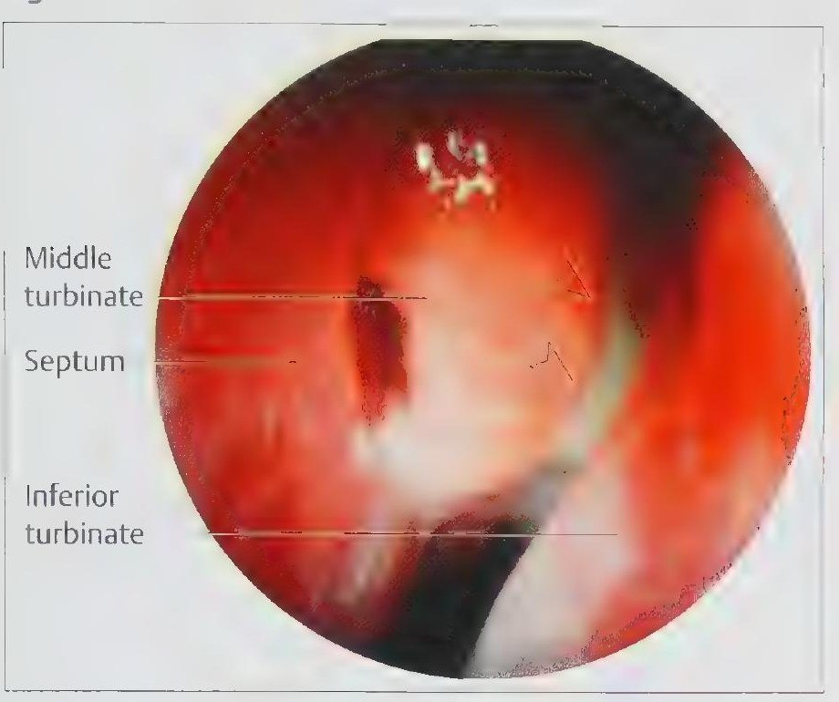
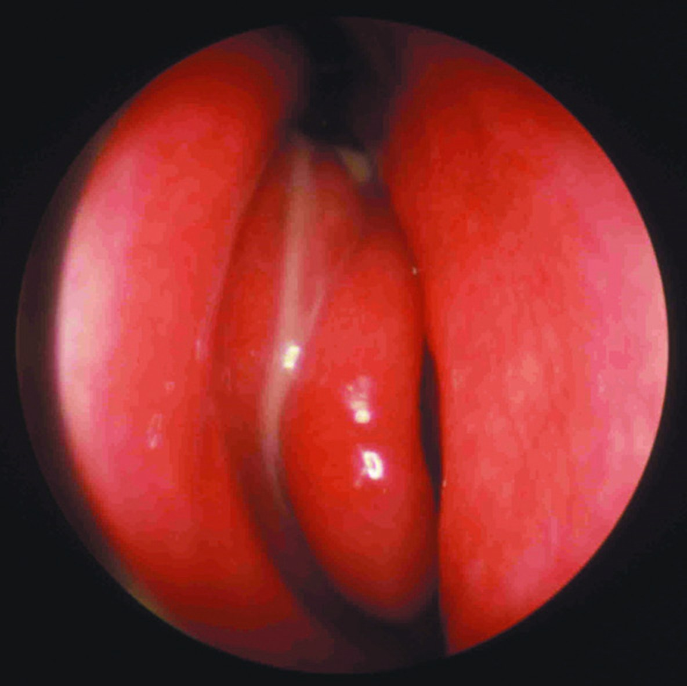

Синуситы
Определение и терминология
Современные европейские рекомендации (EPOS) определяют риносинусит как воспаление полости носа и околоносовых пазух, которое сопровождается не менее чем двумя симптомами. Одним из них должны быть затруднение носового дыхания (заложенность, обструкция) либо выделения из носа, в том числе по задней стенке глотки; вторым может служить боль или чувство давления в области лица либо снижение или утрата обоняния. Слизистая оболочка пазух непосредственно переходит в слизистую оболочку полости носа, поэтому термин «риносинусит» признан более точным, чем «синусит». Диагноз подкрепляется эндоскопическими данными (полипы, слизисто-гнойное отделяемое из среднего носового хода, отёк слизистой оболочки преимущественно в нём) либо изменениями на компьютерной томографии. по: Scott-Brown, т. 1, с. 1042, 1071
Течение менее 12 недель с полным исчезновением симптомов называют острым риносинуситом, а воспаление, которое сохраняется 12 недель и более без полного разрешения, считается хроническим. Острую вирусную форму отличает продолжительность менее 10 суток; если симптомы удерживаются от 10 суток до 12 недель, говорят о постинфекционном (поствирусном) риносинусите. Бактериальным острый риносинусит считают при наличии не менее трёх признаков из следующих: гнойное отделяемое с преобладанием на одной стороне, выраженная односторонняя боль, температура выше 38 °C, повышение СОЭ или С-реактивного белка, а также «двойное ухудшение», то есть утяжеление состояния после первоначального более лёгкого периода. по: Scott-Brown, т. 1, с. 1026, 1071
Отечественное руководство использует более давнюю терминологию. Острый гайморит и другие воспаления пазух называют по пораженной пазухе: верхнечелюстной синусит (гайморит), фронтит, этмоидит, сфеноидит. При сочетанном поражении применяют названия гаймороэтмоидит, фронтоэтмоидит, этмоидосфеноидит. Они не входят в официальную номенклатуру, но отражают локализацию процесса и определяют тактику лечения. Приставка «рино-» (риногаймороэтмоидит, ринофронтоэтмоидит) подчёркивает, что воспаление пазухи почти всегда сопровождается насморком, который длится столько же, сколько само заболевание пазухи. Название «гайморит» связано с именем английского анатома Н. Гаймора1 (1613–1685), описавшего верхнечелюстную пазуху. по: Бабияк и соавт., т. 1, с. 253, 265
Сроки хронизации в источниках различаются. Руководство Бабияка и соавторов принимает диагноз хронического синусита через 2–3 месяца от начала острого при двух–трёх его рецидивах за это время, а для хронического фронтита и риноэтмоидита называет срок 3 месяца и 2–3 месяца соответственно. Европейские рекомендации опираются на единый порог в 12 недель без полного разрешения симптомов. по: Бабияк и соавт., т. 1, с. 277–278, 296, 306; Scott-Brown, т. 1, с. 1071
Эпидемиология
Острый риносинусит встречается очень часто: по данным обзора в Scott-Brown, ежегодно им болеют от 6 до 15 % населения. Подавляющее большинство случаев вирусные, а доля бактериальных форм оценивается лишь в 0,5–2 %. Осложнения острого риносинусита крайне редки и составляют, по разным оценкам, 2–4 случая на миллион населения в год. Хронический риносинусит поражает не менее 11 % населения; в Великобритании его распространённость выше, чем ишемической болезни сердца или сахарного диабета, а у больных хроническим риносинуситом бронхиальная астма выявляется в 5–17 % случаев. по: Scott-Brown, т. 1, с. 1026, 1028
По наблюдениям отечественных авторов, из хронических синуситов около половины приходится на хронический гайморит. В раннем детском возрасте острый гайморит встречается редко и нередко протекает как остеомиелит верхней челюсти с гнойными свищами и некрозами мягких тканей лица. У детей чаще страдают решётчатые ячейки, потому что остальные пазухи ещё недостаточно пневматизированы; у взрослых по убыванию частоты поражаются верхнечелюстная пазуха, решётчатые ячейки, лобная и клиновидная пазухи. по: Бабияк и соавт., т. 1, с. 254, 277; Probst и соавт., с. 54
Этиология и патогенез острых синуситов
Острые синуситы осложняют острый ринит, грипп, корь, скарлатину и другие инфекционные болезни, а также воспалительные заболевания зубов. Этиологическим фактором служат разнообразные микробные ассоциации, как активизировавшиеся сапрофиты, так и привнесённая патогенная флора. В подавляющем большинстве случаев источник инфекции риногенный; реже выделяют одонтогенный, травматический и гематогенный пути. По зарубежным данным, острое воспаление верхнечелюстной пазухи сочетается с воспалением решётчатых ячеек примерно в половине случаев. Вспышки гриппа сопровождаются резким ростом числа больных острым гайморитом; при вскрытии умерших во время пандемии 1918–1920 гг. характерные для острого воспаления изменения в верхнечелюстной пазухе находили в 70 % случаев. по: Бабияк и соавт., т. 1, с. 253–255
Современные данные уточняют микробиологию. Из вирусов при остром риносинусите чаще всего выявляют риновирусы (около 50 %), реже вирусы гриппа и парагриппа, аденовирусы, респираторно-синцитиальный вирус и энтеровирусы. Среди бактерий преобладают Haemophilus influenzae (44 %), Streptococcus pneumoniae (27 %) и Moraxella catarrhalis (14 %), реже встречаются Streptococcus pyogenes и золотистый стафилококк; соотношение возбудителей изменилось после внедрения вакцинации. В центральных районах России, как указывают Пальчун и соавторы, основными возбудителями остаются пневмококк и гемофильная палочка, сохраняющие чувствительность к аминопенициллинам и цефалоспоринам. по: Scott-Brown, т. 1, с. 1027–1028; Пальчун и соавт., с. 317
Бактериальное воспаление развивается как суперинфекция на фоне вирусного повреждения слизистой оболочки. Эпителий утрачивает реснитчатые клетки, число бокаловидных клеток растёт, отёк закрывает соустье пазухи. Накопление слизи вначале повышает давление в пазухе, затем из-за отсутствия вентиляции в ней возникает отрицательное давление; нарастают застой секрета, нарушение газообмена и сдвиг кислотно-основного равновесия, и среда становится благоприятной для размножения бактерий. К предрасполагающим факторам относят анатомические особенности (клетки Галлера, буллёзно изменённую среднюю раковину), аллергию и курение. по: Scott-Brown, т. 1, с. 1027–1028
Тяжесть и частота острого синусита зависят от индивидуальной анатомии, иммунного статуса и вирулентности возбудителя. Среди редких форм Probst и соавторы называют нозокомиальный синусит при длительной назальной интубации, баросинусит при перепадах давления в полёте или при нырянии и синусит пловцов, связанный с попаданием инфекции в пазухи при плавании. по: Probst и соавт., с. 54
Отечественные авторы придают большое значение нервной регуляции. Крылонёбный узел, относящийся к парасимпатической системе, обеспечивает возбуждение холинореактивных структур внутреннего носа и слизистой оболочки пазух. Это проявляется расширением кровеносных сосудов, повышением секреторной активности желёз и увеличением проницаемости клеточных мембран, и именно эти процессы играют решающую роль в патогенезе передних синуситов. Болевой синдром при остром гайморите объясняют давлением экссудата на нервные окончания, невритом и интоксикацией симпатических волокон; соответственно различают постоянный компонент боли, зависящий от токсического неврита, и периодический, связанный с наполнением и опорожнением пазухи. по: Бабияк и соавт., т. 1, с. 254, 270
Классификация синуситов
Острые генуинные синуситы делят на катаральные (серозные) и гнойные, но по существу это две стадии одного процесса. При катаральной форме выражены гиперемия и отёк слизистой оболочки, круглоклеточная инфильтрация вокруг сосудов и желёз; слизистая утолщается, пазуха частично заполняется экссудатом, а нарушение вентиляции и «вакуум» дополняют экссудат транссудатом. При гнойной форме инфильтрация выражена сильнее, а отёк меньше. Ряд зарубежных авторов выделяет катаральную неэкссудативную, катаральную экссудативную, серозно-гнойную, аллергическую и некротическую (с поражением кости) формы. При кори, скарлатине и брюшном тифе в стенках пазух могут возникать очаги некроза, а при дифтерийном поражении в пазухе образуется фибринозный выпот. по: Бабияк и соавт., т. 1, с. 253–254
По происхождению различают риногенные, одонтогенные, гематогенные и травматические синуситы. Хронические воспаления делят на передние (кранио-фациальные) и задние (этмоидосфеноидальные). Классификация Б. С. Преображенского (1956) включает экссудативные формы (катаральную, серозную, гнойную), продуктивные (пристеночно-гиперпластическую и полипозную), некротическую (альтеративную), холестеатомную, аллергическую и атрофическую (резидуальную). Дидактическая классификация учитывает этиопатогенез (ринопатии, одонтогенные синуситы), патоморфологическую форму, характер инфекции (банальная микробиота, гриппозные, специфические, грибковые, вирусные), доминирующий симптом (секреторные, обструктивные, цефалгические, аносмические), клиническую выраженность (латентные, часто обостряющиеся, постоянные), распространённость (моносинусит, гемисинусит, полигемисинусит, пансинусит), наличие осложнений и возраст. Авторы подчёркивают, что эта схема описывает лишь стороны единого патогенетического процесса, а признаки могут появляться последовательно или одновременно. по: Бабияк и соавт., т. 1, с. 277–278, 281
Современная классификация хронических риносинуситов основана на эндоскопической картине. Хронический риносинусит с полипами (CRSwNP) отличают выраженная отёчность стромы эпителия, псевдокисты и субэпителиальная инфильтрация; воспаление в основном эозинофильное, с высокими концентрациями интерлейкина-5 и эозинофильного катионного белка (Th2-тип). Хронический риносинусит без полипов (CRSsNP) характеризуется фиброзом, утолщением базальной мембраны, гиперплазией бокаловидных клеток, подэпителиальным отёком и мононуклеарной инфильтрацией, а воспаление относится к Th1-типу; на него приходится около 45 % случаев, наблюдаемых в стационарах. Аллергический грибковый риносинусит составляет примерно 10 % случаев CRSwNP, а сочетание полипов с бронхиальной астмой и непереносимостью аспирина (триада Самтера, аспирин-индуцированная респираторная болезнь) наблюдается примерно в 15 %. по: Scott-Brown, т. 1, с. 1026, 1028–1031
Различие в схемах заслуживает внимания: в отечественной классификации Б. С. Преображенского полипозная форма стоит среди патоморфологических, а в европейской система строится вокруг деления на варианты с полипами и без них. Руководство Бабияка и соавторов отдельного раздела о полипозном риносинусите не содержит, и этот материал приведён далее по Scott-Brown и Пальчуну. по: Бабияк и соавт., т. 1, с. 278; Scott-Brown, т. 1, с. 1028
Общие принципы диагностики
Диагностика острых синуситов опирается на анамнез, осмотр, диафаноскопию, лучевые методы и, по показаниям, пункцию пазухи. При опросе уточняют причину заболевания (предшествовавший насморк, простуда, болезни зубов, механическая или барометрическая травма), эпидемиологическую обстановку за последние 2–3 недели и повторность симптомов. Патогномоничным признаком считается гнойная дорожка в среднем носовом ходе, обнаруживаемая в сочетании с другими объективными данными. Эндоскопия полости носа позволяет оценить состояние остиомеатального комплекса, наличие полипов, слизисто-гнойного отделяемого и отёка в среднем носовом ходе и взять материал на микробиологическое исследование. по: Бабияк и соавт., т. 1, с. 257–258; Scott-Brown, т. 1, с. 1027
Диафаноскопия оценивает прозрачность передних пазух. Симптом Геринга2 означает снижение или отсутствие свечения в области собачьей ямки и подглазничной области на стороне поражения, симптом Робертсона состоит в асимметричном свечении латеральной стенки носа, симптом Вошена — Дэвидсона в отсутствии свечения зрачка, симптом Карела в том, что при закрытых глазах обследуемый не ощущает света на больной стороне. Пальчун и соавторы относят диафаноскопию к ориентировочным методам, не связанным с облучением. Ультразвуковая биолокация («Синускан») основана на отражении сигнала на границе сред разной плотности: воздух не проводит ультразвук, поэтому секрет, полипы или опухоль регистрируются на эхограмме. Метод безвреден и пригоден для скрининга, но по информативности уступает рентгенографии, КТ и МРТ. по: Бабияк и соавт., т. 1, с. 258; Пальчун и соавт., с. 124–125
Рентгенологическое исследование остаётся наиболее информативным среди простых методов, а иногда единственно выявляет малосимптомное воспаление. При остром воспалении толщина слизистой оболочки может увеличиваться в 15–20 раз, в отёчной слизистой образуются кисты, при хроническом процессе возникают гиперплазия и полипозное перерождение. Рентгенографию начинают с носоподбородочной проекции, лобные пазухи и решётчатый лабиринт лучше видны в носолобной, глубину лобной пазухи и состояние её стенок оценивают на боковом снимке, а клиновидные пазухи в аксиальной проекции. Снимок в вертикальном положении позволяет заметить уровень жидкости при количестве секрета от 0,5–1 мл. Отёк и утолщение слизистой оболочки дают вуаль, жидкость и гной интенсивное затенение. Отсутствие лобной пазухи, которое встречается примерно в 14 % случаев, следует отличать от затенения: при неразвитой пазухе нет чёткого интенсивного фестончатого контура. по: Бабияк и соавт., т. 1, с. 258–259; Пальчун и соавт., с. 116–117
Компьютерная томография обладает значительно большей разрешающей способностью, чем рентгенография. По данным Пальчуна и соавторов, в стандартной ситуации перед операцией достаточно коронарной проекции, а при подозрении на деструкцию стенок или после многократных вмешательств добавляют аксиальную. Бабияк и соавторы считают КТ и МРТ показанными при подозрении на грубое поражение лицевого скелета высоковирулентной инфекцией, при иммунодефиците и при гнойных осложнениях. Probst и соавторы называют КТ единственным приемлемым методом при подозрении на хронический синусит, поскольку обычные рентгенограммы мало информативны из-за наложения структур, а Scott-Brown рассматривает КТ как обязательное исследование перед любым вмешательством. В острой стадии вирусной природы на КТ видны утолщение слизистой оболочки и отёчная средняя раковина, а при бактериальном синусите — уровень жидкости. МРТ особенно полезна при грибковых поражениях, мукоцеле, кистах с нетипичным содержимым и для дифференциации воспалительных и опухолевых изменений; её следует с осторожностью использовать для оценки результата лечения, поскольку остаточный отёк, сохраняющийся месяцами, даёт ложноположительные данные. по: Бабияк и соавт., т. 1, с. 260; Пальчун и соавт., с. 121–123; Probst и соавт., с. 56; Scott-Brown, т. 1, с. 1027
Диагностическая пункция верхнечелюстной пазухи, по мнению Бабияка и соавторов, показана лишь тогда, когда она сочетается с лечебной целью и когда при рентгенографии и эндоскопии возникает подозрение на патологическое содержимое. Посев пунктата нередко оказывается стерильным, что связывают с анаэробной флорой. При хроническом гиперпластическом процессе пункция позволяет получить материал для оценки метаплазии эпителия. Эндоскопия самой верхнечелюстной пазухи (синускопия) выполняется через клыковую ямку троакаром, оптикой 30° и 70°; в норме слизистая оболочка жёлтоватая, тонкая, с хорошо различимой сосудистой сетью, при остром воспалении виден диффузный отёк и гиперемия, при хроническом — неравномерное утолщение, участки полипозного перерождения и фиброза. Показаниями служат изменения на рентгенограмме без клиники, клиническая картина без рентгенологических признаков, уточнение состояния пазухи перед операцией и подозрение на опухоль; после процедуры возможны длительные парестезии и невралгические боли. по: Бабияк и соавт., т. 1, с. 262, 283; Пальчун и соавт., с. 28–29
Острый верхнечелюстной синусит
Острый верхнечелюстной синусит (острый гайморит) представляет собой острое воспаление преимущественно слизистой оболочки и подслизистого слоя верхнечелюстной пазухи. Иногда процесс переходит на надкостницу, а при особо вирулентной инфекции захватывает кость и приобретает хроническое течение. Иногда первичный очаг возникает в ячейках решётчатой кости или в лобной пазухе, а верхнечелюстная пазуха вовлекается вторично. по: Бабияк и соавт., т. 1, с. 253
Начало характеризуется односторонней головной болью, распиранием и давлением в половине лица и в области собачьей ямки на фоне острого насморка. Боль иррадиирует по ходу второй ветви тройничного нерва, к альвеолярному отростку и в лобную область. Присоединяются лихорадка, озноб, недомогание, слабость, потеря аппетита. Головная боль и распирание нарастают ночью и достигают максимума к утру, а к вечеру стихают после опорожнения пазухи; обильные выделения облегчают состояние, но их прекращение при накоплении секрета возвращает прежние симптомы. Выделения вначале серозные, затем слизистые и слизисто-гнойные, иногда с кровью; геморрагические выделения в самом начале характерны для гриппозного гайморита и могут сопровождаться герпетическими высыпаниями в преддверии носа и на верхней губе. Признаком присоединения синусита к насморку служит прекращение выделений из здоровой половины носа при сохранении их с поражённой стороны. Если насморк не проходит за 7–10 дней, следует думать об остром гайморите. по: Бабияк и соавт., т. 1, с. 254
Объективно определяются припухлость, покраснение и местное повышение температуры кожи щеки и нижнего века, болезненность при пальпации передней стенки пазухи и при перкуссии скуловой кости; возможны парестезии и повышенная чувствительность кожи над пазухой. При передней риноскопии в среднем носовом ходе видна гнойная полоска (симптом гнойной полоски), выделения стекают в носоглотку и видны на задней стенке глотки. В неясных случаях слизистую оболочку среднего носового хода смазывают раствором адреналина, а голову через несколько минут наклоняют вниз и в сторону, пораженной пазухой кверху: при наличии гноя он выделяется через расширенный ход (симптом Заблоцкого-Десятовского). При двустороннем гайморите нарушается обоняние. Вовлечение надкостницы и костных стенок проявляется пастозностью мягких тканей над передней стенкой пазухи и отёком нижнего века вследствие сдавления вен, который иногда закрывает глаз и переходит на другую половину лица. по: Бабияк и соавт., т. 1, с. 255
Одонтогенный гайморит чаще всего развивается при прикорневых воспалительных процессах и близком расположении корня зуба ко дну пазухи. Пазуха обычно расположена над лунками второго премоляра и первого и второго моляров (пятого–седьмого зубов), при больших размерах она распространяется кзади до третьего моляра, а кпереди до первого премоляра и реже до клыка. Корни зубов отделены от дна пазухи костной перегородкой разной толщины: в одних случаях она достигает 1 см и более, в других истончена настолько, что состоит лишь из надкостницы или только слизистой оболочки. По данным Л. И. Свержевского, дно пазухи в 42,8 % расположено ниже дна полости носа, в 39,3 % на одном уровне с ним и в 17,9 % выше его. Чаще всего заболевание возникает, когда гранулирующий периодонтит или апикальная гранулема разрушает перегородку между периодонтом и пазухой; инфекция может распространяться и через венозное сплетение между альвеолярным отростком и слизистой оболочкой пазухи. Возникающие одонталгии (чаще боль проецируется на область пятого и шестого зубов) нередко имитируют пульпит или периодонтит. по: Бабияк и соавт., т. 1, с. 255–256
При вмешательствах на пазухе и высоком стоянии корней зубов слизистую оболочку дна следует щадить, так как энергичное выскабливание может повредить сосудисто-нервный пучок пульпы и привести к некрозу зуба. При тонкой нижней стенке и манипуляциях на зубах (экстракция, депульпирование) дно пазухи перфорируется с образованием луночного свища; если при этом развивается острый гайморит, через свищ появляются гнойные выделения. В таких случаях показаны санация пазухи и при необходимости пластическое закрытие свища. по: Бабияк и соавт., т. 1, с. 256–257
Травматический гайморит представляет собой острое гнойное воспаление пазухи после тупой или огнестрельной травмы верхней челюсти. Он возникает при инфицировании гематомы пазухи, при переломе костей с внедрением обломков и при огнестрельном ранении с попаданием в пазуху инородных тел. Клиническая картина зависит от механизма травмы и степени разрушения кости и слизистой оболочки, а лечебные мероприятия определяются ведущим синдромом, обычно сочетающимся с повреждением соседних органов (глазницы, полости носа, сосудов, нервов). Гематогенный путь свойствен тяжёлым общим инфекциям (грипп, скарлатина, тифы), когда возбудитель попадает в пазуху с током крови; нередко действуют оба пути. по: Бабияк и соавт., т. 1, с. 255, 257
Течение острого гайморита может завершиться спонтанным выздоровлением (обычным при многих катаральных формах, одновременно с вызвавшим процесс насморком), выздоровлением после лечения, переходом в хроническую форму или осложнением. Переходу в хроническую стадию способствуют высокая вирулентность флоры, ослабленный иммунитет, сопутствующие хронические заболевания верхних дыхательных путей и бронхолёгочной системы, общая аллергизация, искривление перегородки носа и узкие либо блокированные выводные протоки. Осложнения возникают по тем же причинам, чаще гематогенным и лимфогенным путём. Наиболее серьёзны внутричерепные (менингит, абсцесс мозга, синус-тромбоз, сепсис), а из местных на первом месте стоит флегмона орбиты, ретромандибулярной области и лица. по: Бабияк и соавт., т. 1, с. 260–261
Прогноз в основном благоприятен, даже при местных и внутричерепных осложнениях, но резко ухудшается у резко ослабленных больных и при тяжёлых общих инфекциях. Бабияк и соавторы отдельно указывают, что у больных ВИЧ-инфекцией острые воспаления пазух не поддаются традиционному лечению, а риногенные внутричерепные осложнения, как правило, заканчиваются летально. по: Бабияк и соавт., т. 1, с. 261

Лечение острых синуситов
Лечебная тактика в учебнике не приводится: она изложена по клиническим рекомендациям Минздрава в разборе «Острый синусит».
Острый риноэтмоидит
Острый риноэтмоидит (острый передний этмоидальный риносинусит) поражает передние ячейки решётчатой кости; этиология, патогенез и патологоанатомические изменения те же, что при остром гайморите. Передние ячейки тесно контактируют с лобной и верхнечелюстной пазухами и сообщаются с ними, задние сообщаются с клиновидной, поэтому воспаление передних ячеек часто сочетается с воспалением лобной или верхнечелюстной пазухи, а воспаление задних с воспалением основной. по: Бабияк и соавт., т. 1, с. 265
Местные симптомы включают ощущение полноты и распирания в глубине носа и лобно-глазничной области, вызванное отёком слизистой оболочки, экссудатом и остеопериоститом стенок ячеек; кожа у внутреннего угла глаза и основания носа утолщена, пастозна, слегка гиперемирована и чувствительна. Спонтанные невралгические боли в лобно-глазнично-носовой области нарастают ночью, переходят в пульсирующие пароксизмы, сопровождаются светобоязнью и быстрой утомляемостью зрения. Обструкция носовых ходов приводит к резкому затруднению дыхания, выделения вначале серозные, затем слизисто-гнойные с прожилками крови, обильные, с ощущением инородного тела в глубине носа, зудом, жжением и приступами чихания. Гипосмия и аносмия обусловлены обструкцией обонятельной щели и поражением обонятельных рецепторов. по: Бабияк и соавт., т. 1, с. 266
При передней риноскопии отёк закрывает обонятельную щель и на одной стороне резко контрастирует со здоровой; средняя раковина увеличена, отёчна, гиперемирована и болезненна. В верхнем и среднем носовых ходах определяются слизисто-гнойные выделения. На стороне поражения отмечают отёк век, кожи внутреннего угла глаза и области слезного мешка, гиперемию склеры, в выраженных случаях хемоз, резкую болезненность при пальпации слезной кости у корня носа (точка Грюнвальда) и болезненность глазного яблока при пальпации через закрытые веки с иррадиацией в верхние отделы носа. по: Бабияк и соавт., т. 1, с. 267
Для течения риноэтмоидита описаны критерии: этиопатогенетический (ринопатические, одонтопатические, баротравматические, механотравматические формы), патоморфологический (катаральные, секреторно-серозные), микробиологический, симптомный (гиперсекреторная, гипертермическая, аносмическая, невралгическая формы), по выраженности (сверхострые, чаще у детей, острые, подострые, чаще у стариков), по осложнениям (интраорбитальные, интракраниальные, оптохиазмальные) и возрастной. Исходом может стать спонтанное выздоровление, свойственное катаральным формам, выздоровление после лечения или переход в хронический этмоидит, чему способствуют рецидивирующее течение, хронические очаги инфекции, частые простудные заболевания и иммунодефицит. Прогноз благоприятен; при орбитальных осложнениях он осторожен, а при внутричерепных (лептоменингит, субдуральный и экстрадуральный абсцессы) опасен для жизни. После вирусного риноэтмоидита, как правило, остаётся стойкая аносмия. по: Бабияк и соавт., т. 1, с. 267–268
Диагноз устанавливают по анамнезу, жалобам и объективным данным, включая рентгенографию. О диагнозе свидетельствуют два симптома: слизисто-гнойные выделения в верхних отделах полости носа и боль характерной локализации и иррадиации. На рентгенограммах в носоподбородочной и боковой проекциях видно затенение ячеек решётчатого лабиринта, нередко с понижением прозрачности верхнечелюстных или лобных пазух. Дифференциальный диагноз проводят с обострением хронического этмоидита, воспалением других пазух и со спонтанной прозопалгией при эссенциальной невралгии тройничного нерва. по: Бабияк и соавт., т. 1, с. 268
Острый фронтит
Острый фронтит проходит те же патологоанатомические стадии (катаральную, экссудативную, гнойную), что и другие синуситы. Частота и тяжесть заболевания прямо зависят от размеров воздухоносности лобной пазухи, длины лобно-носового канала и его проходимости. Причинами служат банальная ринопатия, механическая или барометрическая травма (баро- и аэросинусит), нарушения обмена и иммунодефицит. Острый фронтит классифицируют по этиопатогенезу, патоморфологическим изменениям (катаральное, вазомоторное, аллергическое, гнойное, язвенно-некротическое воспаление, остеит), микробному составу, преобладающим симптомам (невралгическая, секреторная, фебрильная формы), течению (торпидная, подострая, острая, сверхострая), осложнениям и возрасту. по: Бабияк и соавт., т. 1, с. 268–269
Больных беспокоит постоянная или пульсирующая боль в области лба, иррадиирующая в глазное яблоко и глубину носа, с ощущением распирания над бровями. Верхнее веко, внутренний угол глаза и периокулярная область отёчны и гиперемированы, усиливаются слезотечение и светобоязнь, появляется гиперемия склеры, иногда анизокория за счёт миоза на больной стороне. На высоте воспаления, при переходе катаральной фазы в экссудативную, боли усиливаются, нарастая ночью, и становятся нестерпимыми, распирающими, рвущими. В начале заболевания выделения из носа скудные и обусловлены ринитом. Головная боль усиливается с прекращением выделений, что свидетельствует о накоплении секрета в пазухе; закапывание деконгестантов восстанавливает дренаж лобно-носового канала, возникают обильные выделения в передних отделах среднего носового хода, и боли стихают. Остаются болезненность лобной вырезки, тупая головная боль при потряхивании головой и при поколачивании надбровной дуги. по: Бабияк и соавт., т. 1, с. 269
Объективно определяют диффузную припухлость в области надбровной дуги, корня носа, внутреннего угла глаза и верхнего века, отёчность наружных оболочек глазного яблока и слезных путей, гиперемию склеры и слезотечение. Кожа гиперемирована, чувствительна при дотрагивании, горячая. Пальпация выявляет болевую точку Юинга на наружно-нижнем угле орбиты и боль в области надглазничной вырезки, а непрямая пальпация пуговчатым зондом выявляет резкую болезненность слизистой оболочки в области среднего носового хода. При передней риноскопии слизистые или слизисто-гнойные выделения вновь появляются в передних отделах среднего носового хода после удаления, особенно обильно после анемизации; слизистая оболочка резко гиперемирована и отёчна, средняя и нижняя раковины увеличены. Наблюдаются односторонняя гипосмия, иногда объективная какосмия при язвенно-некротическом процессе, а средняя раковина и область agger nasi могут быть истончены, «изъедены». по: Бабияк и соавт., т. 1, с. 270
Острый фронтит развивается по тем же направлениям, что и острые синуситы. Воспаление нередко распространяется по естественным ходам или гематогенно на соседние пазухи и маскирует первичный очаг, поэтому при подозрении на фронтит необходимо исключить поражение других пазух; основным диагностическим методом считается рентгенография в разных проекциях с обязательной оценкой основной пазухи, предварительные — диафаноскопия, термография, УЗИ. Дифференциальный диагноз проводят в первую очередь с обострением хронического вялотекущего фронтита (на него указывает 40–50 % мононуклеаров в гнойном содержимом), с острым гайморитом и риноэтмоидитом. Если после пункции и промывания верхнечелюстной пазухи гнойные выделения в среднем носовом ходе появляются вновь, это означает воспаление в лобной пазухе. Болевой синдром необходимо отличать от лицевых невралгий, в частности от синдрома Чарлина (невралгия носоресничного нерва): сильные боли во внутреннем углу глаза с иррадиацией на спинку носа, односторонняя припухлость, гиперестезия и гиперсекреция слизистой оболочки носа, инъекция склер, иридоциклит, гипопион, кератит; после анестезии слизистой оболочки носа все симптомы исчезают. Следует исключать и вторичное гнойное воспаление при опухолях лобной пазухи. по: Бабияк и соавт., т. 1, с. 271
Острый этмоидосфеноидит
К острым краниобазальным синуситам относят воспаление слизистой оболочки задних ячеек решётчатой кости и клиновидной пазухи, которые часто поражаются совместно: началом служит обычно риногенное воспаление задних ячеек, свободно сообщающихся с клиновидной пазухой. Острый этмоидосфеноидит представляет собой острое неспецифическое воспаление, возникающее первично на основе банального или гриппозного ринита либо (очень редко) как следствие преходящего воспаления передних пазух; заболевание возникает преимущественно у лиц зрелого возраста. по: Бабияк и соавт., т. 1, с. 273
Чаще всего он следует за эпидемическим вирусным или бактериальным ринитом на аллергическом фоне и тогда приобретает характер пансинусита. При злокачественном течении ринита (высокая температура, геморрагии, гнойное язвенно-некротическое поражение слизистой оболочки и кости) инфекция легко проникает в основную пазуху. Причиной могут служить также сап, менингококковая инфекция, сифилис, детские инфекции, травма среднего этажа полости носа, а опухоли этмоидо-сфеноидальной и ринофарингеальной области, нарушая дренаж, вызывают транссудацию с последующим нагноением. Важным фактором служит степень пневматизации клиновидной пазухи и задних ячеек: чем крупнее пазуха, тем чаще и тяжелее воспаление. по: Бабияк и соавт., т. 1, с. 273–274
Выделяют открытую форму с функционирующими выводными отверстиями, лёгким течением и средней тяжести, и закрытую с блоком отверстий, скоплением экссудата и тяжёлым течением, нередко требующую экстренного хирургического вмешательства; именно закрытая форма вызывает тяжёлые внутричерепные осложнения. По патоморфологии различают катаральную, серозную, гнойную и остеонекротическую формы, по осложнениям — базальный оптохиазмальный арахноидит с невритом зрительного нерва, менингоэнцефалит, абсцесс мозга. Глубокое залегание пазухи и соседство с важными структурами определяют завуалированное течение: в начале нет симптомов, указывающих на локализацию, и диагноз затруднён. по: Бабияк и соавт., т. 1, с. 274
Больные жалуются на давление и распирание в глубине носа с распространением на глазницы, мучительные распирающие боли, иррадиирующие в темя, затылок, нередко в лоб, которые носят постоянный характер, периодически резко обостряются и сопровождаются тошнотой и рвотой, усиливаясь при потряхивании головой. Снижаются острота обоняния (воспаление задних ячеек) и острота зрения (периваскулярный отёк в канале зрительного нерва). При открытой форме характерны постоянные выделения в носоглотке. Объективно определяются диффузный отёк слизистой оболочки, обструкция носовых ходов, «задняя» ринорея, гипосмия, слезотечение, светобоязнь, гиперемия склер, нарушение аккомодации и остроты зрения; при передней риноскопии скудное гнойное отделяемое, которое в изобилии видно при задней риноскопии на задних концах раковин и по задней стенке глотки. Общие симптомы включают ремиттирующую лихорадку 38–39 °C с суточными колебаниями 1,5–2 °C, слабость, потерю аппетита, бессонницу из-за ночной головной боли, нейтрофильный лейкоцитоз, при аллергии эозинофилию, повышенную СОЭ, раздражительность или апатию. по: Бабияк и соавт., т. 1, с. 274–276
Прямая диагностика трудна: раньше для окончательного диагноза требовались недели и месяцы наблюдения, а при современных видеоэндоскопии, КТ и МРТ время может сократиться до 1–2 дней. Диагноз основывается на анамнезе острого ринита и типичном болевом синдроме (рвущие боли в глубине носа, иррадиирующие в темя, затылок и глазницу). Снижение обоняния в начале может быть истолковано как заложенность носа, но присоединение глазных симптомов (гиперемия склеры, нарушение остроты и полей зрения) при скудных выделениях или их отсутствии указывает на экссудативный сфеноидит закрытого типа. Диагноз подтверждают рентгенографией либо МРТ. Дифференциальный диагноз проводят с воспалением других пазух, окципито-цервикальными невралгиями (невралгия затылочного нерва Арнольда), невралгией внутреннего носового нерва и опухолями; неэффективность консервативного и даже хирургического лечения заболевания, имитирующего этмоидосфеноидит, служит критерием исключения диагноза. по: Бабияк и соавт., т. 1, с. 276–277
Прогноз неосложнённых форм благоприятен; при затянувшемся гнойно-некротическом процессе возможны осложнения со стороны зрительного нерва и мозговых оболочек, а при отсутствии срочного вмешательства на клиновидной пазухе — хронизация в виде базального лептоменингита и оптохиазмального арахноидита. Прогноз для жизни серьёзен при тромбозе кавернозного синуса и абсцессе мозга. Лечение в подавляющем большинстве случаев консервативное и должно начинаться как можно раньше: местно используют противовоспалительные средства, деконгестанты, антисептики и кортикостероиды, чтобы обеспечить функцию выводных отверстий клиновидной пазухи, внутрь или парентерально антибиотики широкого спектра либо подобранные по посеву, полученному при катетеризации; назначают антигистаминные препараты, внутривенно хлорид кальция и аскорбиновую кислоту, детоксикационную терапию. Особенно эффективна катетеризация клиновидной пазухи, прежде всего при закрытой форме; при необходимости выполняют микрохирургические вмешательства в области задних ячеек для облегчения дренажа. по: Бабияк и соавт., т. 1, с. 277
Хронические синуситы: общая характеристика
Хронические воспаления пазух в подавляющем большинстве случаев вторичны и возникают вследствие неоднократных острых синуситов, лечение которых не было завершено, либо из-за эндогенных и экзогенных факторов, препятствующих терапевтическому эффекту: врождённых и посттравматических деформаций внутриносовых структур, хронических очагов инфекции, иммунодефицита, вредных климатических и производственных условий и вредных привычек. Течение затяжное, часто рецидивирующее, патоморфологически чаще проявляется продуктивными формами. по: Бабияк и соавт., т. 1, с. 277–278
По данным Scott-Brown, в основе хронического риносинусита лежит взаимодействие воспаления слизистой оболочки, местного микробного сообщества и нарушения мукоцилиарного клиренса. Роль стафилококковых суперантигенов, грибковых антигенов, биоплёнок и остеита обсуждается, но однозначно не доказана: бактерии высевают у больных обоих вариантов, однако неясно, отражает ли находка инфекцию или колонизацию; биоплёнки, по предварительным данным, присутствуют у значительной части больных, но их значение для патогенеза остаётся неопределённым. Остеит рассматривают как маркёр тяжести, он чаще встречается при повторных операциях. по: Scott-Brown, т. 1, с. 1028–1031
Probst и соавторы называют общим механизмом нарушение вентиляции остиомеатального комплекса (сужение или обструкция области среднего носового хода), которое затрудняет дренаж верхнечелюстной пазухи и передних ячеек решётчатой кости. Отёк слизистой оболочки в узких проходах создаёт порочный круг: сначала рецидивирующие острые воспаления, затем стойкий хронический синусит. Вызывать его могут искривление перегородки и гребни, а также хронические воспалительные, аллергические, травматические и опухолевые процессы; чаще поражаются верхнечелюстная пазуха и решётчатые ячейки, реже лобная и клиновидная. по: Probst и соавт., с. 56
Следует помнить и о системных причинах хронического риносинусита, которые Scott-Brown рекомендует исключать при необычном течении. К ним относятся муковисцидоз (аномальная потовая проба, мутация гена CFTR), первичная цилиарная дискинезия (синдром Картагенера при сочетании с обратным расположением внутренних органов), первичные иммунодефициты (общая вариабельная иммунная недостаточность, дефицит IgA и подклассов IgG), ВИЧ-инфекция, саркоидоз, туберкулёз, гранулематоз с полиангиитом (положительные цитоплазматические АНЦА), эозинофильный гранулематоз с полиангиитом (синдром Чарга — Страусса), новообразования, а также ятрогенные причины (атрофический ринит и корки после обширных операций, химиотерапия). У больных, не отвечающих на стандартное лечение, дефицит иммуноглобулинов выявляют нередко: низкий IgG в 18 %, IgA в 17 %, IgM в 5 %. При одностороннем процессе всегда исключают одонтогенную причину (около 10 % случаев) и оро-антральное сообщение; Односторонняя прозрачная ринорея требует исключения ликвореи, а односторонние полипы — опухоли. по: Scott-Brown, т. 1, с. 1029–1033
Хронический верхнечелюстной синусит
Хронический гайморит составляет около половины всех хронических синуситов. Определённый интерес представляет классификация М. Лазяну, близкая к схеме Б. С. Преображенского, но соответствующая принятой на Западе трактовке. Хронический катаральный синусит a vacuo (закрытая форма) характеризуется отсутствием дренажной функции или её недостаточностью для вентиляции; слизистая оболочка диффузно гиперемирована и утолщена, в пазухе находится серозный транссудат, часты обострения. При гнойном синусите в пазухе скапливается «старый» густой гной с казеозными массами и зловонным запахом, слизистая оболочка продуктивно утолщена, желатинозна, серого или мясисто-красного цвета, с изъязвлениями и участками некроза, где обнажается кость с признаками остита и остеомиелита. по: Бабияк и соавт., т. 1, с. 278
Полипозный синусит проявляется пролиферацией многослойного цилиндрического мерцательного эпителия, получившей в зарубежной литературе название «зубья пилы»; вместе с обильной секрецией бокаловидных клеток и желёз она составляет основу формирования полипозных масс. Кистозный синусит возникает из-за ретенции секрета желёз с образованием тонкостенных поверхностных или толстостенных глубоких микрокист. Гиперпластический синусит характеризуется утолщением и гиалинизацией сосудистых сплетений и фиброзом. При казеозной форме зловонные казеозные массы заполняют всю пазуху и, давя на окружающие ткани, разрушают их и образуют обширные сообщения между полостью носа, верхнечелюстной пазухой, решётчатым лабиринтом и лобным синусом. Холестеатомный синусит возникает при проникновении эпидермиса в пазуху: образуется белая перламутровая оболочка (матрикс) из эпителиальных чешуек с пастообразной жироподобной зловонной массой. Эти формы могут сочетаться, но прогрессируют в указанной последовательности. по: Бабияк и соавт., т. 1, с. 278–280
В качестве возбудителя выступает гноеродная микробиота, нередко в ассоциации с анаэробами, грибами и вирусами. Обструкцию поддерживает угнетение мерцательного эпителия вследствие затянувшегося острого гайморита или частых его возникновений в течение 2–3 месяцев. Выводное отверстие физиологически узко, так как лежит в области конвергирующего синостоза между небной костью, костной основой нижней раковины и пластинкой решётчатой кости; отёк в области соустья приводит к накоплению экссудата, повышению давления и рассасыванию кислорода, гибели аэробов и активизации анаэробной флоры, нередко ассоциированной с микобактериями. Хроническому воспалению способствуют бухты, где застаиваются гнойные массы, врождённые и приобретённые дефекты внутриносовых структур и пазухи, хронические очаги инфекции в лимфаденоидной системе верхних дыхательных путей и в зубах, неблагоприятные климатические и производственные условия, баротравма и аллергия. Чаще заболевают лица, в детстве страдавшие диатезами, авитаминозом, рахитом, простудными заболеваниями. по: Бабияк и соавт., т. 1, с. 280–281
Жалобы при хроническом гайморите: односторонние гнойные выделения из носа (при моносинусите), постоянные головные боли с периодическим усилением в проекции пазухи, иррадиирующие в височную и орбитальную область (при обострении, при одонтогенных формах в сочетании с одонталгией), чувство полноты и распирания, неприятный гнилостный запах из носа (субъективная какосмия), вызывающий тошноту и потерю аппетита, заложенность носа и ухудшение обоняния обструктивного характера. Объективно: диффузная гиперемия и отёчность наружных оболочек глаза и слезных путей, дерматит преддверия носа и верхней губы (импетиго, экзема, трещины), иногда сикоз и фурункулы; при обострении болезненность в точках выхода нижнеглазничного нерва, собачьей ямки и внутреннего угла глаза. Одностороннее затруднение дыхания выявляют пробой с пушинкой В. И. Воячека или риноманометрией. На носовом платке видны жёлтые пятна с казеозными включениями и прожилками крови, зловонные во влажном виде, но отличающиеся от запаха при озене и сладковато-приторного запаха при риносклероме. При банальном хроническом гайморите обоняние обычно сохранено, но при вовлечении решётчатого лабиринта и полипах в обонятельной щели возникает гипо- или аносмия; нарушается и слёзоотведение. по: Бабияк и соавт., т. 1, с. 281–282
При передней риноскопии в носовых ходах густые слизисто-гнойные или сливкообразные грязно-жёлтые выделения, нередко с казеозом, высыхающие в корки; в среднем и общем ходах полипы, увеличенные гиперемированные раковины, нередко картина ложной двойной средней раковины (подушечка или губка Кауфмана), обусловленная отёком слизистой оболочки воронки, и буллёзная средняя раковина. После анемизации среднего хода обнаруживаются обильные гнойные выделения, которые при наклоне головы вперёд стекают по нижней раковине и скапливаются на дне полости носа, вновь накапливаясь после удаления — признак объёмистого резервуара. При задней риноскопии виден гной в хоанах, а задний конец средней раковины нередко приобретает вид хоанального полипа. Общие симптомы: головные боли, усиливающиеся при обострении, наклонах, кашле, чихании и потряхивании головой, невралгические кризы, утомление, признаки хронического очага инфекции. Течение сменяется ремиссиями и обострениями: летом возможно кажущееся выздоровление, а с наступлением холодов боль, гнойные и гнилостные выделения, субфебрильная температура и признаки общей инфекции возобновляются. по: Бабияк и соавт., т. 1, с. 282–283
Диагноз устанавливают по анамнезу и клинике. Диафаноскопия при хроническом гайморите убедительнее, чем при остром: отёк слизистой оболочки и экссудат непрозрачнее, а при полипах, казеозных и холестеатомных массах на больной стороне нет ни одного признака нормальной пазухи (полулунного свечения в подглазничной области, свечения собачьей ямки, просвечивания боковой стенки носа и зрачка). Рентгенографию выполняют в лобно-носовой, носоподбородочной и боковой укладках; обычно видно затенение пазухи. Контрастная рентгенография показывает, что вещество окружает полипозные массы. Дифференциальный диагноз включает простой хронический гнойный насморк (поражает обе половины носа), инородное тело носа, хронический фронтит и риноэтмоидит (симптомы Френкеля и Балденвека), озену (всегда двусторонняя), доброкачественные и злокачественные опухоли, сифилитическую гумму и одонтогенные кисты. Прогноз благоприятен, но поздняя диагностика внутричерепного осложнения при высокой вирулентности микробиоты и ослабленном организме может привести к смерти. по: Бабияк и соавт., т. 1, с. 283–285

Операция Колдуэлла — Люка (1898, 1900) получила наибольшее распространение благодаря простоте, малой травматичности, возможности местной анестезии и доступу ко всей полости пазухи, а также к её верхневнутреннезаднему углу для вскрытия задних решётчатых ячеек. Через разрез по переходной складке преддверия рта (от второго резца до второго моляра) обнажают переднюю стенку и вскрывают её в наиболее тонком месте у собачьей ямки, сохраняя подглазничный нерв. Классический вариант предполагал тотальное выскабливание слизистой оболочки («радикальная операция»), но не оправдал себя. Современная техника ограничивается удалением необратимо изменённых тканей, формированием широкого соустья с нижним носовым ходом (размером с двухрублёвую монету по описанию Бабияка и 2 × 3 см по Пальчуну, со сглаживанием «порога» между дном пазухи и дном носа) и закрытием соустья лоскутом слизистой оболочки латеральной стенки носа, который препятствует рубцовой облитерации окна и ускоряет заживление. Пазуху рыхло тампонируют на 48 часов (Пальчун предлагает латексный раздувной баллон на сутки); по мнению Бабияка и соавторов, стимулировать заживление можно репарантами и витаминами пластического обмена 10–14 дней, но опыт их применения в оториноларингологии невелик. При перфоративном одонтогенном гайморите одномоментно закрывают свищ лунки зуба. Стационарное лечение при гладком течении занимает 6–7 дней, пазуху промывают через соустье с 3-го дня. по: Бабияк и соавт., т. 1, с. 286–292; Пальчун и соавт., с. 225–227
Пальчун и соавторы подчёркивают, что даже после полного удаления слизистой оболочки через 7–8 месяцев она эпителизируется с восстановлением функции мерцательного эпителия, а неполное удаление не приводит к санации пазухи. Операция Кречмана — Денкера (резекция края грушевидного отверстия) даёт доступ к носоглотке; операция Канфельда — Штурмана выполняется внутриносовым доступом и применима лишь при небольших изменениях под контролем видеоэндоскопии. по: Пальчун и соавт., с. 225; Бабияк и соавт., т. 1, с. 292–293
Хронический одонтогенный гайморит
Одонтогенный фактор играет важную роль и в хронических гнойных гайморитах, и в возникновении одонтогенных кист пазухи (околокорневых и кист, не связанных с дном пазухи). Заболевание возникает при распространении возбудителей со стороны инфицированных зубов, чему способствует строение дна пазухи и корней второго премоляра, первого и второго моляров. Гранулёма верхушки корня, разрушив костную перегородку между пазухой и периапикальными тканями, вовлекает прилежащую слизистую оболочку; при присоединении риногенной инфекции или недостаточной функции соустья процесс охватывает всю слизистую оболочку и хронизируется из-за постоянного источника инфекции. Околокорневая киста, особенно с верхушкой корня в просвете пазухи, быстро увеличивается и может заполнить большую часть пазухи; пазуха при этом гомогенно затенена и увеличена в объёме. Источником могут быть также нагноившаяся киста и остеомиелит альвеолярного отростка и тела верхней челюсти. по: Бабияк и соавт., т. 1, с. 293–295
Длительное незаживление лунки после удаления второго премоляра или первого–второго моляров (а при больших размерах пазухи третьего моляра) указывает на хронический гнойный одонтогенный гайморит. Одонталгии объясняются общностью иннервации слизистой оболочки пазухи и зубов веточками верхнего зубного сплетения (передние, средние и задние альвеолярные ветви верхнечелюстного нерва). Лечение исключительно хирургическое и обычно относится к компетенции челюстно-лицевого хирурга и стоматолога: санация одонтологического очага вплоть до удаления зуба, затем вскрытие пазухи обычным способом с формированием искусственного дренажного отверстия. Сохраняющийся луночный свищ закрывают пластически двумя лоскутами (из слизистой оболочки преддверия рта и твёрдого нёба) в холодном периоде. Историческая операция У. Купера3 (1707) состояла в дренировании пазухи через лунку с ежедневным промыванием через серебряную канюлю; сегодня этот доступ применим для эндоскопического осмотра пазухи. по: Бабияк и соавт., т. 1, с. 295–296
Хронический риноэтмоидит
Хронический гнойный риноэтмоидит (хронический передний этмоидит) считают следующей стадией острого риноэтмоидита, не излеченного за 2–3 месяца. Характерны глубокое необратимое поражение слизистой оболочки передних ячеек с периоститом и остеитом (остеомиелитом) межъячеистых перегородок; при несвоевременном радикальном лечении процесс переходит на задние ячейки и основную пазуху. Чисто изолированного переднего этмоидита не бывает: в той или иной степени воспаление захватывает лобную и верхнечелюстную пазухи и задние ячейки, и своевременная санация первичного очага быстро ликвидирует вторичные проявления. В запущенных случаях возможны гемисинусит и односторонний пансинусит. по: Бабияк и соавт., т. 1, с. 296–297
Основные жалобы: ощущение полноты и давления в глубине носа и лобно-орбитальной области, одно- или двусторонняя заложенность носа, особенно ночью, постоянные, периодически усиливающиеся слизисто-гнойные выделения, которые трудно высморкать. Вначале выделения скудные, вязкие слизистые, затем гнойные, зеленовато-жёлтые, а при периостите и остите — с гнилостным запахом (субъективная и объективная какосмия, которая может говорить о сочетании с одонтогенным гайморитом). Гипосмия и аносмия интермиттирующие, зависят от вазомоторных и отёчных процессов и полипов. Боли постоянные, тупые, в глубине носа на уровне корня, усиливаются ночью; при одностороннем процессе распространяются в глазницу и лобную область, при обострении становятся пароксизмальными пульсирующими с светобоязнью, быстрой утомляемостью зрения, бессонницей и снижением трудоспособности. по: Бабияк и соавт., т. 1, с. 297–298
Объективно видна диффузная инъекция сосудов склеры, дерматит преддверия носа и верхней губы. Точка Грюнвальда в холодном периоде чуть болезненна, а в остром периоде резко; симптом Гаека — тупая боль в глубине носа при надавливании на основание носа. Эндоскопия выявляет признаки хронического катара, отёк и гиперемию, сужение ходов, множественные полипы на ножках, гипертрофированную раздвоенную среднюю раковину (симптом Кауфмана). Скопление гноя в ячейке, образующей среднюю раковину, приводит к разрушению её костной основы и образованию лакунарной кисты, concha bullosa, которая представляет собой мукоцеле средней носовой раковины. После анемизации видна жёлтая полоса гноя, стекающая по средней и нижней раковинам. Закрытая форма может развиваться в одной ячейке или только в средней раковине: тогда преобладает алгический синдром (назоорбитальные невралгии, иногда гемикрания, нарушение аккомодации и конвергенции), гнойных выделений нет, видна локальная гиперемия. по: Бабияк и соавт., т. 1, с. 298
Без лечения процесс долго течёт, образуются полипы и кисты, разрушается кость, формируются обширные полости в решётчатой кости с распространением на задние ячейки и другие пазухи, возможны периэтмоидальные (флегмона орбиты) и внутричерепные осложнения. Прогноз при своевременном комплексном лечении благоприятен, при интраорбитальных и внутричерепных осложнениях осторожен. Для диагностики имеет значение рентгенография в лобно-подбородочной проекции, при распространённых процессах томография, КТ, МРТ; для биопсии удаляют часть буллы и берут содержимое, а также пунктируют область agger nasi. Дифференцируют с поражением соседних пазух и, при выраженных болевых формах, с синдромами Чарлина и Сладера, банальным полипозом, ринолитиазом, давним инородным телом, опухолями решётчатого лабиринта, гуммой. Синдром Сладера (невралгия крылонёбного узла) проявляется чиханием, жгучей сверлящей болью во внутреннем углу глаза, носу, верхней челюсти, нёбе с иррадиацией в затылок и плечо, гипестезией и слезотечением. по: Бабияк и соавт., т. 1, с. 298–300, 338
Лечение хронического риноэтмоидита
Лечебная тактика в учебнике не приводится: она изложена по клиническим рекомендациям Минздрава в разборе «Хронический синусит».
Хронический фронтит
Хронический фронтит представляет собой воспалительное заболевание слизистой оболочки и, в зависимости от стадии, более глубоких тканей лобной кости, возникающее как следствие острого фронтита, не излеченного в течение 3 месяцев. Способствуют ему анатомические аномалии (искривление перегородки, узкий и длинный лобно-носовой канал), полипы, частые простудные заболевания, аллергия, неоднократные профессиональные баротравмы, очаги инфекции, хронические риниты (озена, гиперпластические, вазомоторно-аллергические формы). Запущенные формы, как правило, ассоциированы с хроническим гайморитом и этмоидитом. Всегда следует искать первичную причину и поражение других пазух. по: Бабияк и соавт., т. 1, с. 306
В классификации выделяют пневмосинус лобной пазухи с клапанным механизмом (воздух входит, но не выходит; воспаления нет, но повышенное давление даёт алгический синдром), закрытые (часто латентные) и открытые формы, этиологические формы (банальная, анаэробная, специфическая, грибковая микрофлора), патогенетические (ринопатические, аллергические, травматические), патоморфологические (катаральная по типу vacuum sinus, полипозная, кистозная, экссудативная, гнойная, казеозная, остеонекротическая, гиперпластическая, смешанные) и симптоматические (олигосимптоматическая, невралгическая, секреторная, аносмическая) варианты. Выделяют также детские, зрелые и старческие формы и осложнённые (поражение век, слёзных путей, флегмона орбиты, тромбофлебит продольного и кавернозного синусов, менингит, абсцесс лобной доли). по: Бабияк и соавт., т. 1, с. 306–307
Субъективно: распирание и полнота в соответствующей половине лба и глубине носа, одностороннее нарушение дыхания и обоняния, давление в глазном яблоке, слизисто-гнойные, казеозные или гнилостно-кровянистые выделения, какосмия, светобоязнь, слезотечение (особенно при вторичном дакриоцистите), ухудшение зрения. Боль постоянная, тупая, в проекции пазухи, с пароксизмами и иррадиацией в глаз, темя, висок и ретромаксиллярную область (вовлечение крылонёбного узла). Объективно: гиперемия и отёк мягких тканей глаза, слезное озеро и мясцо отёчны, слезотечение по носогубной складке, дерматит, импетиго, экзема преддверия носа и верхней губы, нередко фурункул; болезненны перкуссия лобного бугра и надглазничное отверстие, определяется точка Юинга. При эндоскопии отёк и гиперемия слизистой средней трети носа, увеличенная средняя раковина, густой гной, количество которого растёт после смазывания среднего хода адреналином; выделения появляются в переднем отделе среднего хода и стекают кпереди, в отличие от гайморита, при котором гной стекает в носоглотку. При сопутствующем гайморите возможен симптом Френкеля: при наклоне головы теменем вниз в носу появляется много гноя, а если после опорожнения пазухи пункцией он вновь появляется при нормальном положении головы, это свидетельствует о хроническом гнойном воспалении лобной пазухи. по: Бабияк и соавт., т. 1, с. 307–308, 338
Без лечения нарастают местные и общие нарушения. Грануляции, полипы, мукоцеле, казеоз и холестеатомные массы разрушают костные стенки, образуются свищи (чаще в области глазницы), а при разрушении задней стенки возникают внутричерепные осложнения. Прогноз в целом благоприятен, но резко ухудшается при внутричерепных осложнениях, особенно глубоких паравентрикулярных абсцессах мозга. Диагноз основан на анамнезе (длительность свыше 3 месяцев), симптомах, анемизации среднего хода, диафаноскопии и рентгенографии (уровни экссудата, тотальное или фрагментарное затенение при полипах, грануляциях, казеозных и холестеатомных массах), при осложнениях КТ и МРТ. Трепанопункция, предложенная Беком, применяется редко: как лечебная процедура она малоэффективна, лучшие результаты даёт при закрытых хронических фронтитах. Дифференциальный диагноз проводят между острым фронтитом и обострением латентного хронического (мононуклеары 40–50 % в гное свидетельствуют о хроническом), с сопутствующим этмоидитом и гайморитом (гайморит чаще служит первопричиной), невралгией тройничного нерва (синдром Чарлина) и опухолями лобной пазухи. по: Бабияк и соавт., т. 1, с. 308–309
Доступы к лобной пазухе делят на наружный чрезлобный (Огстон — Люк, Кунт; операция Кунта с тотальной резекцией передней стенки из-за травматичности и косметического дефекта не применяется), наружный чрезглазничный (Янсен — Жак, Киллиан, Белоголовов) и чрезносовой (Галле). Показания к операции Огстона — Люка (аналогу операции Колдуэлла — Люка): неэффективность консервативных мер, невозможность эндоназального дренирования, многокамерное строение пазухи, полипозный и посттравматический фронтит, костные фрагменты и инородные тела, орбитальные осложнения, острый менингоэнцефалит, гумма. Противопоказания: острый неосложнённый фронтит, возраст до 14 лет, системные заболевания. Лобно-носовой канал формируют острой ложкой до размера, пропускающего кончик мизинца. по: Бабияк и соавт., т. 1, с. 309–313
Фронто-орбитальная трепанация по Киллиану (глазнично-лицевая фронтотомия) получила наибольшее распространение в XX в.: она сочетает широкий подход (с возможностью вскрыть решётчатые ячейки и клиновидную пазуху), хороший косметический результат и оптимальный лобно-носовой канал. Вскрывают лицевую и глазничную стенки, сохраняя между отверстиями костный мостик, который поддерживает форму лобно-глазничной области. По Н. В. Белоголовову («Галле взрячую») лобно-носовой канал формируют со стороны грушевидного отверстия; эндоназальный способ Галле применим при широкой полости носа и крупной пазухе и при распространении видеоэндохирургии может вновь стать методом выбора. После операции трубку промывают с 1–2-го дня и удаляют через 2–3 недели; наиболее ответственный этап — предупреждение облитерации канала (удаление грануляций, бужирование зондами Риттера), так как подавляющее большинство рецидивов обусловлено именно заращением. Пальчун и соавторы называют наиболее распространённой операцию Риттера — Янсена с дренажом по Б. С. Преображенскому (трубка 6–8 мм на 3–4 недели). Руководство 2009 г. описывает также протез канала из лиофилизированной артерии, армированной спиралью из никелида титана с памятью формы (клиника В. Т. Пальчуна). по: Бабияк и соавт., т. 1, с. 313–321; Пальчун и соавт., с. 227–229
Операция по Н. В. Белоголовову («Галле взрячую») выполняется через разрез по Киллиану: вскрывают нижнюю стенку пазухи, а лобно-носовой канал формируют со стороны грушевидного отверстия (канавка в лобном отростке верхней челюсти, лоскут слизистой оболочки укладывают на край костной раны, вставляют окончатую трубку); дренаж извлекают через 2–3 недели. Эндоназальный способ Галле применим при широкой полости носа и достаточном размере пазухи, при простой хронической эмпиеме и одностороннем фронтоэтмоидите: выкраивают лоскут слизистой оболочки перед средней раковиной, вводят в канал зонд-ориентир, сбивают agger nasi, трепанируют дно пазухи, проводят ревизию и выскабливание (при видеохирургии щадящее), укладывают лоскут и вставляют дренажную трубку на 4–6 мм выше дна пазухи. Если зонд не вводится в лобную пазуху через естественное соустье, от способа Галле отказываются и переходят на наружный. Авторы считают, что при распространении видеоэндохирургии эндоназальный способ вновь может стать методом выбора. по: Бабияк и соавт., т. 1, с. 318–321
Хронический сфеноидит
Хронический сфеноидит (хронический сфеноэтмоидит) представляет собой хроническое воспаление слизистой оболочки основной пазухи при неэффективном лечении острого в течение 2–3 месяцев. За этот срок возникают глубокие, часто необратимые изменения слизистой оболочки, переходящие на надкостницу и кость. По данным В. Ф. Мельника (1994), двустороннее поражение наблюдается в 65 % случаев, в 70 % сфеноидит сочетается с воспалением других пазух, а изолированное поражение — в 30 %, вероятно, из-за первичного инфицирования из очагов в лимфаденоидных образованиях носоглотки (хронический аденоидит). Чаще всего в патогенезе играют роль предшествующие хронические воспаления других пазух, в основном вялотекущий процесс в задних ячейках решётчатой кости. Клиническая картина стёрта, часто замаскирована заболеваниями других пазух, и заболевание нередко проявляется через осложнения (неврит зрительного нерва, базальный пахименингит, оптохиазмальный арахноидит). по: Бабияк и соавт., т. 1, с. 321–322
Симптоматика зависит от формы процесса и анатомии пазухи. Закрытая форма (нет сообщения с носоглоткой) проявляется значительно ярче открытой: полнота и тяжесть в голове, распирание в периназальной области и глубине орбит, постоянные периодически обостряющиеся головные боли с иррадиацией в темя и орбиты, усиливающиеся при потряхивании головой. Характерна «постоянная болевая точка», строго индивидуальная и повторяющаяся при каждом обострении; боли обусловлены не только давлением экссудата, но и невритом чувствительных нервных окончаний, нейропатиями, характерными для синдромов Сладера, Чарлина и Харриса. Могут быть боли в надглазничной и подглазничной областях, в определённых зубах, в сосцевидной области и верхних отделах шеи, гипосмия (при сочетании с этмоидитом), какосмия при гнилостном распаде, характерно снижение остроты зрения даже без оптохиазмального арахноидита, возможна временная тугоухость. При открытой форме главная жалоба — вязкие дурно пахнущие выделения в носоглотке, высыхающие в жёлто-серо-зелёные корки; больные вынуждены промывать нос и носоглотку. по: Бабияк и соавт., т. 1, с. 322–323
Объективно: гиперемия слизистой оболочки носа и паренхиматозная гипертрофия раковин, слабый эффект сосудосуживающих средств, гнойные выделения и корки в носовых ходах, вязкий гной и мелкие полипы в обонятельной щели, вязкий гной и корки на задней стенке глотки; при задней риноскопии иногда виден полип, исходящий из основной пазухи. При хроническом этмоидите нередко преобладают общие симптомы: неврологические и астеновегетативные нарушения (нарушение сна, ухудшение памяти, утрата аппетита, раздражительность), желудочно-кишечные расстройства из-за заглатывания гноя, у отдельных больных тяжёлое ипохондрическое состояние. Чаще, чем при других синуситах, возможны тяжёлые осложнения (флегмона орбиты, неврит зрительного нерва, пахименингит основания черепа, оптико-хиазмальный арахноидит, абсцесс мозга, тромбофлебит кавернозного синуса). Прогноз большей частью благоприятен, при быстро прогрессирующем тромбофлебите кавернозных синусов и паравентрикулярных и стволовых абсцессах очень серьёзен. по: Бабияк и соавт., т. 1, с. 323–324
Диагноз основывается на симптомах, течении, результатах зондирования и пункции клиновидной пазухи, рентгенографии, КТ и МРТ. Дифференциальный диагноз включает хронические воспаления других пазух (прежде всего задних решётчатых ячеек и фронтоэтмоидит), простой и озенозный ринофарингит, окципито-цервикальную невралгию при болезни Арнольда — Киари, болевые синдромы Сладера, Харриса и Чарлина. Пальчун и соавторы называют клиновидную пазуху «немой пазухой», потому что характерные субъективные проявления отсутствуют; наиболее информативной считают КТ в коронарной или аксиальной проекции. по: Бабияк и соавт., т. 1, с. 324; Пальчун и соавт., с. 200–201, 229
Доступы к основной пазухе: прямая эндоназальная этмоидосфеноидэктомия, чрезверхнечелюстная, чрезглазничная и транссептальная. Чаще других при сочетанном поражении используют способ Пьетрантони — де Лима: один доступ через верхнечелюстную пазуху (по Колдуэллу — Люку) позволяет ревизовать все пазухи одной стороны, сохраняя носовые раковины. Транссептальный способ Хирша даёт хороший обзор передней стенки и позволяет достичь гипофиза. Пальчун и соавторы описывают эндоназальный доступ (поэтапное вскрытие решётчатых клеток инструментом Гартмана, затем передней стенки клиновидной пазухи чуть выше нижнего края средней раковины) и трансмаксиллярный; без операционного микроскопа или эндоскопа вскрытие клиновидной пазухи названо опасным. по: Бабияк и соавт., т. 1, с. 325–329; Пальчун и соавт., с. 229–230
Эндоскопическая хирургия околоносовых пазух
Пальчун и соавторы называют микроэндоскопические эндоназальные операции с оптикой микроскопа и эндоскопа наиболее перспективным направлением. Показаны они при хроническом серозном или экссудативном синусите, ограниченном полипозном синусите, неинвазивном грибковом поражении, кистозном синусите, инородных телах, буллах и гиперплазии слизистой оболочки остиомеатального комплекса. Не рекомендуются при альтеративных и продуктивных формах хронического синусита, внутричерепных осложнениях, опухолях, остеомиелите, рубцовой и костной облитерации соустий после прежних операций; в этих случаях эндоскоп служит для уточнения диагноза, биопсии, частичного удаления очага. Преимущества: постоянный визуальный контроль, точность, минимальная кровопотеря и сохранение неизменённой слизистой оболочки. по: Пальчун и соавт., с. 230–231
Различают подход Мессерклингера (шаг за шагом спереди назад: резекция крючковидного отростка, решётчатая булла, передние клетки, инфундибулум и естественное соустье верхнечелюстной пазухи, лобная бухта, средние и задние клетки, клиновидная пазуха) и подход Виганда (сзади наперёд, от клиновидной пазухи, более радикальный, с формированием соустья с верхнечелюстной пазухой под нижней раковиной практически при всех формах гайморита). Операцию выполняют на спине, обычно под наркозом; за 8–10 минут до начала под контролем эндоскопа на 2–3 минуты вводят турунду с 0,1 % адреналином, затем инфильтрационная анестезия (в область переднего конца средней раковины, места её прикрепления и основания крючковидного отростка по 1–1,5 мл). по: Пальчун и соавт., с. 231–232
Эндоскопическое вскрытие верхнечелюстной пазухи начинают с надлома средней раковины и смещения её медиально, серповидным скальпелем разрезают слизистую оболочку у основания крючковидного отростка на глубину не более 1–2 мм и удаляют отросток щипцами Блэксли, затем решётчатую буллу; естественное соустье расширяют в пределах 5–8 мм, что даёт возможность осмотреть пазуху оптикой 70° и удалить кисты, полипы, грибковые массы. Лобную пазуху вскрывают, начиная с ревизии лобного кармана, зондируют канал изогнутой ложкой по Куну, расширяют отверстие кпереди, не удаляя всю слизистую оболочку вокруг (чтобы не вызвать рубцов и стеноза). Вскрытие решётчатого лабиринта требует особой осторожности из-за близости бумажной пластинки (удаляемые ткани помещают в физиологический раствор: клетчатка орбиты всплывёт) и риска кровотечения из решётчатых артерий. Клиновидную пазуху вскрывают у заднего края верхней раковины или трансэтмоидально, помня о крылонёбной артерии, канале зрительного нерва и сонных артериях. по: Пальчун и соавт., с. 232–236
Микрогайморотомия (троакар Козлова с воронкой) заключается в проколе передней стенки через разрез около 0,5 см под верхней губой между 4-м и 5-м зубами; показана при экссудативных формах, инородных телах, полипах, кистах, неинвазивном грибковом синусите, уточнении диагноза. При невозможности тщательной санации переходят к операции Колдуэлла — Люка. по: Пальчун и соавт., с. 236–237
Scott-Brown рассматривает функциональную эндоскопическую хирургию (FESS) как стандарт хирургического лечения хронического риносинусита. Операция включает унцинэктомию, удаление решётчатой буллы, заднюю этмоидэктомию с перфорацией базальной пластинки средней раковины в нижнемедиальном квадранте, сфеноидотомию и вмешательство на лобной пазухе через клетку agger nasi, причём окружное повреждение слизистой оболочки лобной бухты неминуемо ведёт к стенозу. Подчёркнуто, что объём вмешательства зависит от взглядов хирурга на причину болезни: там, где главной считают обструкцию остиомеатального комплекса, выполняют ограниченную операцию (вскрытие среднего носового хода и переднюю этмоидэктомию), там же, где хирургия призвана создать условия для местной терапии, — расширенную фронто-сфено-этмоидотомию. Послеоперационное ведение: ирригации большим объёмом физиологического раствора, при выраженной эозинофильной форме короткие курсы преднизолона (в авторской практике 25 мг в сутки 10 дней, при тяжёлом полипозе до 3 недель с постепенным снижением), повторные осмотры через 7–10 дней, затем еженедельно или раз в две недели; к 6-й неделе полость, как правило, заживает. Профилактические антибиотики после плановой операции не улучшают результат. по: Scott-Brown, т. 1, с. 1071–1076
Осложнения эндоскопических операций (0,3–22,4 %, медиана 7,0 % по обзору литературы) бывают редкими, но тяжёлыми: кровотечение из ветвей клиновидно-нёбной и передней решётчатой артерий, повреждение орбиты (проптоз служит показанием к декомпрессии орбиты, при необходимости с кантотомией), повреждение зрительного нерва (стероиды и срочная консультация офтальмолога), ликворея (около 0,5 % операций, чаще вблизи вертикальной пластинки решётчатой кости) и повреждение внутренней сонной артерии при дегисценции стенки клиновидной пазухи. Использование навигационной системы достоверно снижает число осложнений. Рандомизированных исследований хирургии при хроническом риносинусите мало; в лучшем из них (90 больных) операция и длительное медикаментозное лечение (антибиотики, интраназальные стероиды, промывания) дали сопоставимый значимый эффект. Во многом польза хирургии состоит в обеспечении доступа к пазухам для местной терапии. по: Scott-Brown, т. 1, с. 1066, 1077
Полипозный риносинусит
Носовые полипы рассматривают как финальное локальное проявление хронического воспаления слизистой оболочки носа и пазух и как подгруппу хронического риносинусита (CRSwNP). Этиология остаётся неясной, у части больных обсуждают роль аллергии, стафилококковых суперантигенов, грибов и биоплёнок. Диагностика опирается на эндоскопию (передняя риноскопия не исключает полипов), КТ в коронарной проекции и, при необходимости, МРТ для дифференциации с опухолью. Эндоскопическая шкала оценивает полипы (0 — нет, 1 — только в среднем ходе, 2 — за его пределами), отёк, отделяемое, рубцы и корки; на КТ оценивают по системе Лунда — Маккея (0–2 для каждой пазухи и остиомеатального комплекса, максимум 12 с каждой стороны). Распространённость полипов около 4 % в общей популяции, при астме 7 %, при аспирин-индуцированной астме 30–60 %; у больных полипозом астма выявляется в 30–71 %. по: Scott-Brown, т. 1, с. 1037–1042
К ассоциированным состояниям относятся аспирин-индуцированная респираторная болезнь (триада Самтера: полипоз, астма, непереносимость аспирина; в основе лежит смещение метаболизма арахидоновой кислоты в сторону лейкотриенов), муковисцидоз (полипы до 86 %, нейтрофильное воспаление, посев — золотистый стафилококк и синегнойная палочка), первичная цилиарная дискинезия (синдром Картагенера), синдром Янга и эозинофильный гранулематоз с полиангиитом (полипы примерно у 50 %). Особенно трудны для лечения полипы при аспирин-индуцированной болезни: по данным когортного исследования у 549 больных, через 5 лет после эндоскопической операции без полипов оставались 84 % контрольных больных, 55 % больных астмой и лишь 10 % больных с триадой Самтера, а через 10 лет рецидивировали все с триадой. Односторонний полип необходимо считать опухолью, пока не доказано иное, особенно у пожилых и у лиц, контактирующих с древесной пылью (антрохоанальный полип, инвертированная папиллома, новообразования). по: Scott-Brown, т. 1, с. 1029, 1039–1041, 1044
Для лечения Scott-Brown предписывает начинать с медикаментозного курса, если не требуется гистология. Основу составляют интраназальные глюкокортикостероиды (улучшают проходимость, уменьшают полипы и частоту рецидивов; при недостаточном обонянии капли действуют лучше спреев, но их используют не более 2 месяцев подряд и не более 4 месяцев в году), а при крупных полипах короткий курс системного преднизолона (около 0,5 мг/кг утром 5–10 дней, по другим данным 2–4 недели) с последующей поддерживающей терапией спреем. Антигистаминные средства помогают только при аллергии, антилейкотриеновые препараты — при сопутствующей астме или непереносимости аспирина; макролиды (3 месяца) дают противовоспалительный эффект, но кларитромицин связан с риском сердечных осложнений; промывания носа дают симптоматический эффект. Моноклональные антитела (омализумаб, меполизумаб) уменьшают полипы, но ограничены стоимостью и риском анафилаксии, а десенсибилизация аспирином применяется при триаде Самтера. Потребность более чем в двух курсах системных стероидов в год служит признаком неэффективности только медикаментозного лечения: курс рассчитывают на 14–21 день (срок жизни эозинофила в ткани), суточная доза не превышает 30–40 мг, а суммарная должна быть меньше 290–1000 мг. по: Scott-Brown, т. 1, с. 1042–1043, 1061–1066
Пальчун и соавторы описывают полипотомию как удаление полипозно-изменённой слизистой оболочки. Полип они определяют как округлое или продолговатое опухолевидное образование на ножке или широком основании. Полипы исходят из клеток решётчатого лабиринта или верхнечелюстных пазух и выходят из среднего и верхнего ходов; антрохоанальный полип чаще исходит из добавочного соустья верхнечелюстной пазухи, а хоанальные бывают также сфенохоанальными и этмохоанальными. Полипозный гаймороэтмоидит часто рецидивирует и может сопровождаться бронхолёгочной патологией, поэтому лечение комплексное: при астме и аллергическом компоненте системный стероид за 3 дня до операции и 3 дня после, затем хирургическая санация, затем эндоназальный топический стероид в течение 4–6 месяцев. Показаниями служат затруднение носового дыхания, нарушение обоняния, рефлекторные неврозы и нарушение вентиляции барабанной полости. Операцию выполняют полипной петлёй с частичным вскрытием клеток решётчатого лабиринта, хоанальные полипы удаляют крючком Ланге; полное вскрытие решётчатого лабиринта без эндоскопической техники невозможно и опасно. Вблизи ситовидной пластинки и бумажной пластинки манипуляции требуют особой осторожности: ориентиром служит свободный край средней раковины, медиальнее которого действовать нельзя. по: Пальчун и соавт., с. 237–240
Probst и соавторы описывают полипоз как отёчную полипозную гиперплазию слизистой оболочки пазух (чаще передних решётчатых ячеек и верхнечелюстной пазухи), выступающую в полость носа. Клиническая картина включает затруднённое дыхание, гипо- и аносмию, головную боль, храп, закрытую гнусавость, привычное покашливание; у детей полипы редки и, как правило, связаны с муковисцидозом. Лечение начинают со спреев с кортикостероидами и антигистаминных препаратов, возможны системные стероиды; многим больным нужна операция, при этом прогноз осторожный даже при современных техниках, и нередко необходима длительная топическая терапия. по: Probst и соавт., с. 57–58
Грибковые синуситы
Грибковый риносинусит делят на неинвазивный и инвазивный в зависимости от наличия грибов в тканях (слизистой оболочке, сосудах, кости). Среди больных хроническим риносинуситом, которым выполняется операция, грибковые формы составляют 12–47 %, из них аллергический грибковый риносинусит — 56–72 %. К неинвазивным формам относят сапрофитное поражение (видимая колонизация грибами корок на слизистой оболочке при нарушении мукоцилиарного транспорта после операций; достаточно эндоскопической очистки), грибковый шар (мицетому) и аллергический грибковый риносинусит. по: Scott-Brown, т. 1, с. 1047–1048
Грибковый шар представляет собой плотное скопление гиф вне слизистой оболочки, обычно в одной пазухе, чаще верхнечелюстной, у иммунокомпетентных пожилых и среднего возраста, чаще женщин, нередко после стоматологических вмешательств (пломбы). Диагноз основан на рентгенологическом затенении пазухи с участками повышенной плотности (включения кальция), творожистых или глинистых массах в пазухе, отсутствии инвазии, эозинофильного преобладания, гранулём или аллергического муцина. Лечение состоит в широком вскрытии пазухи и полном удалении грибкового детрита с осмотром угловой оптикой и последующим наблюдением; противогрибковые препараты не нужны. по: Scott-Brown, т. 1, с. 1048
Аллергический грибковый риносинусит представляет собой неинвазивное воспаление, вызванное аллергической иммунной реакцией на внеслизистые гифы грибов; встречается у молодых иммунокомпетентных лиц (средний возраст 21–33 года, отношение мужчин и женщин 1,5–2,6 : 1), чаще у лиц с низким социально-экономическим статусом. Возбудителями служат преимущественно тёмные грибы (Bipolaris, Curvularia, Alternaria), реже Aspergillus. Патогенез остаётся спорным: рассматривают гиперчувствительность I и III типов, а также эозинофильный механизм, независимый от IgE; предложено деление на аллергический и неаллергический грибковый (эозинофильный муциновый) риносинусит. Диагностические критерии Бента и Куна требуют наличия всех пяти больших признаков: гиперчувствительность I типа (по анамнезу, кожным пробам или in vitro), полипоз носа, характерные КТ-признаки, эозинофильный муцин без инвазии, положительный окрашенный на грибы препарат; малые критерии (астма, одностороннее преобладание, эрозия кости, посев, кристаллы Шарко — Лейдена, эозинофилия крови) лишь подкрепляют диагноз. по: Scott-Brown, т. 1, с. 1039–1041, 1048–1050
Клиническую картину отличает густая вязкая жёлто-зелёная («арахисовое масло», «осевая смазка») слизь среди полипов, у молодого больного с одно- или двусторонним полипозом, реагирующего на пероральные стероиды. КТ без контраста выявляет неоднородное затенение с гиперплотными участками (признак «двойной плотности», или «рельсовых путей»), расширение пазух, асимметричное поражение и эрозию кости; на МРТ участки пониженного сигнала на Т1 и пустого сигнала на Т2 с периферическим усилением. Общий IgE повышен (50–1000 МЕ/мл, в среднем около 550), но как скрининговый тест малоценен; посев положителен в 49–100 %, а надёжным маркёром остаётся гистологическое выявление аллергического муцина. по: Scott-Brown, т. 1, с. 1049–1051
Инвазивные формы различаются по срокам. Острый (молниеносный) инвазивный риносинусит развивается менее чем за 4 недели у иммунокомпрометированных (неконтролируемый диабет, СПИД, трансплантация, гематологические опухоли, нейтропения); в тканях видны гифы, ангиоинвазия, тромбозы и инфаркты. Возбудители — Aspergillus и мукоровые грибы (Rhizopus, Mucor). Начальными проявлениями служат лихорадка неясного происхождения, не купирующаяся 48 часов широкой антибиотикотерапии, корки в носу, носовые кровотечения, головная боль; при эндоскопии изменение цвета, грануляции и изъязвление слизистой оболочки. Без раннего лечения летальность от орбитальных и внутричерепных осложнений составляет 50–80 %. Необходимы восстановление иммунитета, хирургическое удаление пораженных тканей и внутривенный амфотерицин В до идентификации гриба (мукоровые грибы устойчивы к вориконазолу и триазолам). Хронический инвазивный риносинусит (более 12 недель) возникает у иммунокомпетентных или при тонких иммунных нарушениях (сахарный диабет, низкие дозы кортикостероидов), чаще вызывается Aspergillus fumigatus и поражает решётчатые и клиновидную пазухи; гранулематозная форма (в Судане, Индии, Пакистане, Саудовской Аравии) вызывается Aspergillus flavus, проявляется проптозом и увеличивающейся массой щеки или носа; для промежуточных сроков (4–12 недель) предложен термин «подострый инвазивный риносинусит». по: Scott-Brown, т. 1, с. 1055–1056
Пальчун и соавторы относят неинвазивное грибковое поражение пазух к показаниям для микроэндоскопических операций и при подозрении на грибковый характер поражения советуют предварительно выполнять КТ; при гнойно-воспалительных осложнениях с поражением грибами (чаще аспергиллами и кандидами) применяют системные противогрибковые средства (кетоконазол, флуконазол, итраконазол, возможно амфотерицин В). по: Пальчун и соавт., с. 164, 230, 333
Мукоцеле и пиоцеле околоносовых пазух
Мукоцеле представляет собой ретенционную мешотчатую кисту одной околоносовой пазухи, образующаяся при облитерации выводного протока и накоплении слизистого и гиалинового секрета и десквамированного эпителия. Чаще встречается у мужчин в возрасте 15–25 лет, редко до 10 и после 45 лет; локализуется преимущественно в лобной пазухе, затем в решётчатом лабиринте или на границе между ними, очень редко в клиновидной и гайморовой пазухах (в последней чаще одонтогенные кисты). Для образования необходимы две составляющие: обструкция выводного протока и воспалительный процесс в пазухе; предложены моногландулярная, морфогенетическая и компрессионная теории. Давление содержимого и остеолитические цитокины ведут к атрофии, истончению (стенки становятся как пергамент) и резорбции кости, после чего киста выходит в соседние полости. Содержимое асептическое, вязкое, жёлтовато-белое, без запаха; при инфицировании развивается пиоцеле. по: Бабияк и соавт., т. 1, с. 330–331, 335; Scott-Brown, т. 1, с. 1108; Probst и соавт., с. 58
Течение медленное и включает латентный период, период экстерриторизации и период осложнений. В латентном периоде симптомов нет (изредка периодическая односторонняя ринорея), диагноз возможен лишь случайно. При лобной локализации в периоде экстерриторизации преобладают глазные симптомы: припухлость в верхневнутренней области глазницы, диплопия, затем падение остроты зрения и периферическая скотома при давлении на зрительный нерв, эпифора при нарушении слёзоотведения, невралгические боли первой ветви тройничного нерва. Припухлость гладкая, плотная, при истончении кости — крепитация, края дефекта фестончатые; при риноскопии изменений обычно нет. Мукоцеле клиновидной пазухи симулирует опухоль основания черепа или кистозный арахноидит хиазмальной области. Осложнения: инфицирование с образованием пиоцеле, наружных свищей, внутричерепных осложнений (абсцесс, менингит, тромбоз синусов), а также механические — атрофия и дегенерация сдавленных структур, смещение и деформация глаза, дакриоцистит, абсцесс и флегмона орбиты, панофтальмит. по: Бабияк и соавт., т. 1, с. 331–336
Диагноз устанавливают по КТ (гомогенное изоплотное образование в расширенной пазухе с перестройкой стенок; усиление после контраста только при пиоцеле) и МРТ, которая особенно нужна при эрозии задней стенки лобной пазухи или бумажной пластинки; следует помнить, что сигнал на МРТ зависит от содержания белка. Дифференциальный диагноз проводят с остеомой, остеосаркомой, сифилитической гуммой, дермоидной кистой, менингоцеле и энцефалоцеле (последнее расположено по средней линии лобно-межглазничного пространства и расширяет межглазничное пространство на рентгенограмме), а также с грибковым поражением и холестериновой гранулёмой. по: Бабияк и соавт., т. 1, с. 332–335; Scott-Brown, т. 1, с. 1109–1110
Лечение хирургическое. В руководстве 2009 г. указано, что нужно удалить мешотчатое образование и сформировать эндоназально широкое соустье пазухи с носом, без тотального выскабливания слизистой оболочки, а при поражении решётчатого лабиринта обязательно эндоназальное вскрытие ячеек; при мукоцеле основной или гайморовой пазухи — вскрытие обычным способом, удаление мешка и стойкий дренаж, а в послеоперационном периоде промывание 2–3 недели. По Scott-Brown, лечение состоит в широкой маркупиализации мешка: эндоскопическая операция является первой линией для простых мукоцеле лобно-решётчатой локализации, а при сложных поражениях лобной пазухи используют модифицированную эндоскопическую операцию Лотропа, при латеральных вариантах сочетают подходы; стентирование не рекомендуют; облитерацию лобной пазухи (успех 93 %, но осложнения более чем у 20 %) практически оставили; операция Колдуэлла — Люка предлагается только там, где нет эндоскопической хирургии; рецидивы составляют 0–25 %. При большом напряжённом мукоцеле, смещающем лобную долю, следует осторожно декомпрессировать полость (риск субдуральной гематомы и ликвореи). по: Бабияк и соавт., т. 1, с. 336–337; Scott-Brown, т. 1, с. 1110–1111
Расхождение источников касается причин: Бабияк и соавторы называют воспалительную обструкцию, остеому, травму и аномалии развития, а в современных сериях ведущей причиной (66–86 %) считают предшествующую операцию на пазухах (чаще по поводу хронического синусита и полипоза; в одной серии 78 % мукоцеле после операций приходилось на операции Линча — Ховарта и Колдуэлла — Люка против 1,5 % после эндоназальных). Спонтанные мукоцеле составляют 12,5–17 %, посттравматические 7–14 %, на опухоли приходится 1–5 %. По локализации лобная пазуха поражается в 43–45 % случаев, на втором месте стоят решётчатый лабиринт и сочетанные лобно-решётчатые формы. по: Scott-Brown, т. 1, с. 1108
Аномалии развития околоносовых пазух как фактор риска
Пороки развития пазух могут проявляться чрезмерной пневматизацией или отсутствием пазухи (чаще лобной), нарушением топографии с дегисценциями в стенках, добавочными перегородками, истончением или утолщением стенок. Дегисценции нередко служат причиной внутричерепных и глазничных осложнений. Отсутствие лобных пазух обнаруживается у 13–20 % обследованных. Значительная пневматизация лобной пазухи с глубокими бухтами (пневмосинус) обусловливает головную боль, распирание, утомляемость при перепадах давления; у таких лиц, особенно у долихоцефалов с узким и длинным лобно-носовым каналом, чаще возникают фронтиты и баротравмы. Дегисценции глазничной стенки при эмпиеме лобной пазухи нередко приводят к флегмоне глазницы. по: Бабияк и соавт., т. 1, с. 339–341
Верхнечелюстная пазуха может быть двухкамерной (переднезадняя или верхненижняя перегородка), что приводит к диагностическим ошибкам и незавершённым операциям; утолщение медиальной стенки делает невозможной пункцию через нижний носовой ход, а вогнутость лицевой стенки ведёт к тому, что игла попадает под кожу щеки. Строение решётчатой кости очень разнообразно: периорбитальные и сфеноидальные клетки могут окружать глазницу, задние ячейки (клетки Оноди) тесно прилежат к каналу зрительного нерва (в двух третях случаев он проходит по верхнебоковой стенке такой клетки), возможны дегисценции, соединяющие ячейки с орбитой, лобной и основной пазухами и черепными ямками. Толщина верхней стенки основной пазухи колеблется от 0,5 до 6–7 мм, а при пневмосинусе она может отсутствовать, и пазуха отграничена от твёрдой мозговой оболочки только слизистой; дегисценции боковых стенок приводят к контакту пазухи с внутренней сонной артерией, пещеристым синусом, зрительным нервом, верхней глазничной щелью. Это необходимо учитывать при оперативных вмешательствах. по: Бабияк и соавт., т. 1, с. 339–342
Орбитальные осложнения
Инфекция проникает в орбиту из пазух контактным, гематогенным и лимфогенным путями. Этому способствуют тонкость костных стенок (особенно бумажной пластинки решётчатой кости, верхней и внутренней стенок верхнечелюстной пазухи), отверстия и щели в решётчатой кости и стенках лобной, верхнечелюстной и основной пазух, обширные артериальные и особенно венозные связи (вены решётчатого лабиринта с глазничной веной, а последней с венами твёрдой мозговой оболочки и кавернозными синусами), лимфатические пути и общая иннервация носа, пазух и орбиты. Значение имеет и одонтогенный фактор: инфекция может перейти в орбиту через верхнюю стенку пазухи из лунок I–II моляров; особенно опасны для глаз премоляры и первый коренной зуб, реже клыки. Scott-Brown добавляет, что у детей и подростков осложнения чаще из-за более тонких пористых костных стенок, открытых швов и крупных сосудистых отверстий, а распространение происходит и через лишённые клапанов диплоические вены Бреше. по: Бабияк и соавт., т. 1, с. 354–355; Scott-Brown, т. 1, с. 1113
Осложнения острых синуситов зависят от локализации. При остром гайморите возможны сдавление или закупорка слёзно-носового канала с рефлекторными светобоязнью и слезотечением, а при одонтогенном — отёк щеки, век и хемоз. Острый фронтит протекает с офтальмическими осложнениями тяжелее других: отёк кожи лба и век в верхневнутреннем углу, невралгическая боль в зоне первой ветви тройничного нерва, слезотечение, диплопия при взгляде вверх; тромбофлебит вен, анастомозирующих с венами орбиты, может привести к флегмоне. Острый этмоидит проявляется давящей болью в глубине корня носа, интенсивным слезотечением, отёком век, гиперемией конъюнктивы; при затруднённом оттоке гноя, особенно при закрытых эмпиемах задних ячеек у детей со скарлатиной, возможен негнойный или гнойный офтальмит. Острый сфеноидит часто сочетается с поражением задних ячеек; боль в глубине глазницы усиливается при давлении на глазное яблоко, близость канала зрительного нерва создаёт условия для ретробульбарного неврита и синдрома верхней глазничной щели с несоответствием скудной симптоматики и резкого снижения зрения. по: Бабияк и соавт., т. 1, с. 356
Среди осложнений хронических синуситов воспаление век бывает простым (реактивным, негнойным, чаще у детей на фоне катарального этмоидита или фронтита при инфекциях) и гнойным (абсцесс или флегмона клетчатки века при прорыве гноя из решётчатого лабиринта или верхнечелюстной пазухи: отёк, инфильтрат, флюктуирующий абсцесс, птоз, свищ, рубцовое сращение с краем орбиты и лагофтальм с кератитом). Отёк ретробульбарной клетчатки при задних синуситах у детей даёт лихорадку, рвоту, отёк век, хемоз, экзофтальм, неподвижность глаза; его отличает от тромбоза кавернозного синуса удовлетворительное общее состояние и неизменённое глазное дно. По частоте орбитальных осложнений на первом месте стоит фронтит, затем гайморит и этмоидит, на третьем сфеноидит. Остеопериостит орбиты бывает простым (при острых эмпиемах, с отёком кожи, хемозом, диплопией и снижением зрения из-за токсического неврита) и гнойным (острое начало, лихорадка, экзофтальм со смещением глаза в сторону, противоположную очагу, диплопия, неврит, снижение зрения; при поражении вершины орбиты центральная или парацентральная скотома, исход в атрофию зрительного нерва и слепоту). по: Бабияк и соавт., т. 1, с. 356–358
Субпериостальный абсцесс орбиты образуется при разрушении костной стенки: при фронтите флюктуирующая припухлость в верхневнутреннем углу глаза, при этмоидите ниже внутренней спайки век или в проекции слёзного мешка; при задних синуситах боль в ретробульбарной области, усиливающаяся при давлении на глаз, более выраженный экзофтальм, нарушение подвижности и снижение зрения, центральная скотома. Прорыв глубоко расположенного абсцесса в орбиту приводит к ретробульбарному абсцессу с выраженной общей реакцией, напоминающей сепсис. Флегмона орбиты является острым гнойным воспалением с инфильтрацией, некрозом и расплавлением клетчатки, начинающееся с тромбоваскулита сосудов орбиты: тяжёлое состояние, высокая температура, брадикардия, потрясающие ознобы, головная боль, плотные напряжённые гиперемированные веки, смыкание глазной щели, резкий экзофтальм, неподвижность глаза из-за инфильтрации мышц и нервов, хемоз. Острота зрения снижается вплоть до амавроза в трети случаев; в тяжёлых случаях (у 21 % взрослых и 10 % детей) утрачивается чувствительность роговицы с нейротрофическим кератитом, гнойной язвой и панофтальмитом. Флегмона опасна внутричерепными осложнениями, особенно возникающая на почве гнойного сфеноидита. по: Бабияк и соавт., т. 1, с. 358–360
Риногенный ретробульбарный неврит обусловлен близостью канала зрительного нерва к задним пазухам. Острая форма отличается острым насморком в анамнезе, быстрым падением зрения и столь же быстрым улучшением после орошения слизистой оболочки соответствующей половины носа растворами сосудосуживающих средств, умеренной болью при движении глаза и при давлении на надглазничное отверстие, центральной скотомой и иногда сужением периферических границ поля зрения; глазное дно может быть без особенностей или с признаками папиллита. Проба М. И. Вольфковича основана на увеличении слепого пятна после тампонады носа и уменьшении его после снятия тампона или анемизации; симптом Ван дер Хове не считается патогномоничным. Оптико-хиазмальный арахноидит — диффузный продуктивный процесс в базальных оболочках вокруг зрительного перекрёста; 58–78 % случаев связаны с инфекционно-аллергическим воспалением с участием околоносовых пазух, причём ведущую роль играет вялотекущее воспаление клиновидных пазух, а способствующим фактором служат аномалии соотношения пазух и каналов зрительных нервов. Основной признак — быстрое двустороннее нарушение зрения, обусловленное битемпоральной гемианопсией, с нарушением цветоощущения, признаками воспаления на глазном дне; парацентральные скотомы встречаются в 80–87 %. Пневмоцистернография показывает кистозно-слипчивый процесс, КТ выявляет кисты и спайки в цистерне перекрёста, МРТ структурные изменения мозга. Дифференцируют с опухолями гипофиза и хиазмально-селлярной области (чёткие границы выпадений, нет центральной скотомы), аневризмами артериального круга и тромбоэмболией кавернозного синуса. по: Бабияк и соавт., т. 1, с. 360–363
Современная оценка основывается на классификации Чандлера, хотя из-за малой чувствительности и специфичности её вытеснила КТ. Первой стадией считают пресептальный целлюлит (воспаление не выходит за глазничную перегородку), второй — постсептальный целлюлит (орбитальный целлюлит без абсцесса), третьей — субпериостальный абсцесс (чаще у бумажной пластинки при этмоидите), четвёртой — абсцесс орбиты, пятой — тромбоз кавернозного синуса. Стадии не обязательно следуют друг за другом. Probst и соавторы описывают четыре степени: отёк век, периостит, субпериостальный абсцесс и орбитальный целлюлит, причём последний как жизнеугрожающее состояние требует немедленной хирургической декомпрессии под антибактериальным прикрытием; возможен синдром вершины орбиты (поражение II–VI черепных нервов). по: Scott-Brown, т. 1, с. 1113–1117; Probst и соавт., с. 59–60
Частота и структура: орбитальные осложнения составляют 60–75 % всех осложнений острого риносинусита (внутричерепные 15–20 %, костные 5–10 %); 60–85 % случаев орбитального целлюлита вторичны по отношению к синуситу (остальные — дакриоцистит и лицевая инфекция). Среди орбитальных осложнений около 50 % приходится на пресептальный целлюлит, 35 % — на постсептальный без абсцесса, 15 % — на субпериостальный абсцесс; абсцесс орбиты встречается менее чем в 1 %. Орбитальный целлюлит чаще у детей (50 % моложе 6 лет) и молодых (76–85 % моложе 20 лет). В доантибиотическую эпоху смерть или слепота наступали до 20 %. Смертность при тромбозе кавернозного синуса 14–79 %, до половины выживших имеют остаточные параличи черепных нервов и слепоту. по: Scott-Brown, т. 1, с. 1028, 1114–1115; Probst и соавт., с. 59
Обследование включает эндоскопию носа и формальную оценку: хемоз, подвижность глаза, проптоз, афферентный зрачковый дефект, острота зрения по таблице Снеллена, цветоощущение по таблицам Исихара, осмотр диска зрительного нерва, при динамическом наблюдении не реже 2 раз в сутки, при тревожных признаках каждые 4–6 часов. Визуализацией выбора служит КТ с контрастом в трёх проекциях (иногда она не выявляет до половины ранних внутричерепных осложнений, поэтому порог для МРТ низкий); при полной подвижности глаза и нормальном цветоощущении немедленная визуализация не нужна. КТ-картина субпериостального абсцесса — линзовидное скопление с усиливающимся краем рядом с бумажной пластинкой; при кавернозном тромбозе в начале КТ может быть нормальной, дополняют КТ- и МР-венографией. Простые рентгенограммы и УЗИ не информативны. по: Scott-Brown, т. 1, с. 1116–1118
Внутричерепные осложнения
Наиболее частой причиной риногенных абсцессов мозга служат фронтит и этмоидит, реже воспаление верхнечелюстной и основной пазух; поражается обычно лобная доля. Абсцессы передней черепной ямки делят на экстрадуральные, субдуральные и интрацеребральные. При хроническом фронтите инфекция чаще распространяется per continuitatem через дефекты задней или верхней стенки лобной пазухи (в последнем случае возможна двойная патология — флегмона орбиты и внутричерепное осложнение, а при поражении слёзных путей ещё и дакриоцистит); при хроническом этмоидите — через разрушенную решётчатую пластинку с эпидуральным абсцессом; при сфеноидите — через площадку основной кости. При острых синуситах инфекция чаще распространяется гематогенно, так что абсцесс возможен без повреждения твёрдой мозговой оболочки; при контактном пути сначала формируется экстрадуральный абсцесс, затем некроз оболочки и менингит или энцефалит. Локализация абсцесса лобной доли не зависит от стороны поражённой пазухи. Далёкие абсцессы в теменно-височной и затылочной долях возникают при остеомиелите костей черепа через флебит верхнего продольного синуса. по: Бабияк и соавт., т. 1, с. 343–344
Абсцесс мозга представляет собой солитарное скопление гноя в веществе мозга, отграниченное демаркационным барьером; начальной стадией служит ограниченный гнойный энцефалит. Абсцесс размером с куриное яйцо может образоваться за 5–6 дней, но обычно при консервативном лечении развитие замедляется и вокруг гнойника за 4–6 недель образуется капсула. Затем симптомы стихают до мнимого выздоровления, а под влиянием травмы, гриппа, ангины, пневмонии капсула может расплавиться с диффузным распространением инфекции. Клиника включает инфекционные симптомы (температура 37,5–38,5 °C, умеренный лейкоцитоз, СОЭ 40–60 мм/ч, слабость, брадикардия до 40 в минуту), мозговые (головная боль, нарастающая к утру и при натуживании, внезапная рвота, неврит дисков зрительных нервов на глазном дне в 50–60 %, эпилептические припадки, повышение давления спинномозговой жидкости, умеренный цитоз и белок 0,5–1,2 г/л) и очаговые, зависящие от локализации (при лобном абсцессе отёк верхнего века, экзофтальм, диплопия, эйфория и расторможенность, судороги мимической мускулатуры противоположной стороны, парезы, зрачковые расстройства). Нормализация ликвора после образования капсулы — признак ложного выздоровления; внезапное увеличение нейтрофилов и белка с оболочечными симптомами указывает на прорыв в субдуральное пространство или желудочки, внезапная потеря сознания — на прорыв в желудочки. по: Бабияк и соавт., т. 1, с. 344–346
Точный диагноз устанавливается лишь КТ или МРТ; абсцесс следует подозревать при качественно новой головной боли у больных с хроническим гнойным процессом в пазухах, ухе или в отдалённых органах. Дифференцируют с энцефалитами, опухолью, аневризмой, цистицеркозом, нарушениями кровообращения, последствиями травмы. Прогноз неоднозначен: наиболее тревожен при стволовых и паравентрикулярных абсцессах и при метастатических множественных абсцессах. До антибиотиков послеоперационная смертность достигала 50 %, к концу XX в. снизилась до 7–10 %. Лечение безусловно хирургическое, по жизненным показаниям, даже при гнойном менингите и коме. по: Бабияк и соавт., т. 1, с. 346–347
Scott-Brown даёт более полную структуру внутричерепных осложнений. Субдуральная эмпиема является одним из самых частых внутричерепных осложнений синусита (чаще из лобного синуса) и требует быстрого сочетания медикаментозного лечения с нейрохирургическим дренированием; экстрадуральная эмпиема менее симптомна. Ранние симптомы неспецифичны (головная боль, лихорадка, судороги, сонливость, диплопия при парезе VI нерва), предшествующий синусит может быть неочевидным, чаще страдают подростки и молодые мужчины (васкуляризация диплоэ). МРТ превосходит КТ в диагностике внутричерепных осложнений и считается исследованием выбора; при выявлении осложнения обязательно совместное ведение с нейрохирургом, и вмешательство на пазухах предпочтительно выполнять одновременно. При острых осложнениях лучше временный лобный дренаж (трепанация с внешним дренажом), окончательное вмешательство откладывают. Смертность составляет 0–25 %, стойкие последствия (гемипарез, эпилепсия, изменение когнитивных функций, параличи черепных нервов) отмечены у 11–40 %. При церебрите антибиотики предупреждают формирование абсцесса; после его образования показаны дренирование и антибиотики 4–8 недель. по: Scott-Brown, т. 1, с. 1120–1122
Распространение инфекции в венозную систему мозга идёт по рино-офтальмо-церебральным анастомозам. Тромбофлебит вен мозга проявляется септической лихорадкой, головной болью, усиливающейся лёжа, шумом в голове, рвотой, отёками под глазами, оглушённостью, судорогами, парезами и «мерцающими» мигрирующими корковыми симптомами; диагностике помогает допплерография. Тромбоз глубоких вен течёт особенно тяжело, с быстрой комой. Тромбоз синусов твёрдой мозговой оболочки вторичен: инфицированный тромб расплавляется, даёт эмболы, возникают венозный застой, отёк мозга и сепсис с лёгочными абсцессами. Клиническая картина — септическая лихорадка, потрясающие ознобы, профузный пот, сильнейшая головная боль, рвота, бред, припадки, менингеальные симптомы, застой на глазном дне. по: Бабияк и соавт., т. 1, с. 347–352
Тромбоз пещеристого синуса относится к наиболее частым и является следствием септического состояния при гнойных процессах лица, орбиты и пазух. На фоне сепсиса отмечают отёк периорбитальных тканей, нарастающий экзофтальм, хемоз, офтальмоплегию из-за поражения III, IV и VI нервов, птоз, зрачковые расстройства, застой и атрофию зрительного нерва и боль в области глаза и лба при поражении первой ветви тройничного нерва; возможно двустороннее поражение. Тромбоз верхнего продольного синуса характеризуется застоем и извитостью вен корня носа, век, лобной, височной и теменной областей («голова Медузы»), носовыми кровотечениями, болезненностью при перкуссии парасагиттальной поверхности черепа, повышением внутричерепного давления, судорогами (нередко начинающимися со стопы), иногда нижней параплегией. Прогноз риногенных тромбозов серьёзнее, чем абсцессов, при тромбозе глубоких вен, кавернозных синусов и сепсисе нередко неблагоприятен. Лечение предусматривает неотложную ликвидацию первичного очага (широкое вскрытие пазухи, гемисинусотомию или пансинусотомию), антибиотики, подобранные по микробиоте, антикоагулянты, диуретики, иммунопротекторы. по: Бабияк и соавт., т. 1, с. 352–354
Пальчун и соавторы отдельно описывают принципы лечения внутричерепных осложнений: ранняя санирующая операция, выбор антибиотиков с учётом проникновения через гематоэнцефалический барьер и посев на чувствительность. Применяют два антибиотика (полусинтетический пенициллин или цефалоспорин II поколения с аминогликозидом), бензилпенициллин в дозе 30–50 млн ЕД в сутки на 6–8 приёмов 3–5 суток с переходом на 12–18 млн ЕД, цефтазидим 1–2 г каждые 8–12 часов (синегнойная инфекция), цефепим при нейтропении, ванкомицин 2 г в сутки в 2–4 введения при полирезистентных грамположительных кокках, метронидазол при анаэробах; при грибковой этиологии кетоконазол, флуконазол, итраконазол, амфотерицин В. Эндолюмбально вводят цефалоспорины или аминогликозиды по 50–100 мг, при грамотрицательной инфекции лечение продолжают 10–14 дней после стерилизации посевов ликвора, при стафилококковом менингите 14–21 день. Проводят дегидратацию маннитолом, дезинтоксикацию, глюкокортикоиды, при тромбозе синусов и сепсисе гепарин (от 10 000 до 40 000–80 000 ЕД в сутки под контролем свёртывания), иммунотерапию, экстракорпоральные методы. Благоприятный исход зависит от своевременной диагностики и раннего санирующего вмешательства. по: Пальчун и соавт., с. 332–334
Костные осложнения (по Scott-Brown) включают остеомиелит лобной кости и «опухоль Потта» — поднадкостничный абсцесс лобной кости с отёчной «пастозной» припухлостью лба. Инфекция может распространяться кзади с внутричерепными осложнениями (29–60 %) путём эрозии задней стенки или септического тромбофлебита диплоических вен; часто высевается Streptococcus anginosus. Лечение состоит в дренировании лобных пазух (эндоскопически или трепанацией), длительном (6–8 недель) культурально подобранном лечении аэробов и анаэробов, при обширном остеомиелите — бикоронарном доступе, а при внутричерепных осложнениях нейрохирургической трепанации и краниализации; операция Ридела (удаление передней стенки и дна лобной пазухи) вызывает косметический дефект. Остеомиелит верхней челюсти в раннем детстве отнесён к костным осложнениям острого синусита. Probst и соавторы подчёркивают, что главная опасность лобного остеомиелита — распространение инфекции на другие кости свода черепа. по: Scott-Brown, т. 1, с. 1028, 1122–1123; Probst и соавт., с. 60
Прогноз и профилактика
Неосложнённые острые синуситы в большинстве случаев заканчиваются выздоровлением, нередко спонтанным; хронизации способствуют вирулентность возбудителя, иммунодефицит, аллергия, анатомические аномалии и неэффективное лечение. Для профилактики осложнений важны своевременная диагностика и лечение острого синусита, санация одонтогенных и лимфаденоидных очагов, коррекция внутриносовых деформаций, контроль аллергического ринита и (по данным Scott-Brown) курения. Сведения о влиянии лечения аллергического ринита на частоту острого риносинусита основаны на предположениях: убедительных исследований нет. Для хронических форм цель лечения состоит в контроле заболевания, а не в излечении: основой служат интраназальные стероиды и ирригации, хирургия обеспечивает доступ для местной терапии и устраняет локальные причины. При осложнениях исход определяется быстротой диагностики, мультидисциплинарным подходом (оториноларинголог, офтальмолог, нейрохирург, педиатр) и повторной визуализацией при ухудшении. по: Бабияк и соавт., т. 1, с. 260–261, 277; Scott-Brown, т. 1, с. 1060–1061, 1123
Примечания
1Highmore Nathaniel (1613–1685) — крупный английский врач и анатом, получивший известность описанием верхнечелюстной пазухи, впоследствии названной его именем (antrum Highmori). В 1651 г. в своем труде «Corporis humani disquisitio anatomica» впервые описал ряд заболеваний этой пазухи. Острое воспаление ее, по-видимому, впервые описал L. H. Runge в 1751 г. (по: Бабияк и соавт., т. 1, с. 337)
2Heryng Teodor (1847–1925) — известный польский оториноларинголог. (по: Бабияк и соавт., т. 1, с. 337)
3William Cowper (1666–1709) — английский хирург, описал у мужчин бульбоуретральную железу, получившую название железы Купера. (по: Бабияк и соавт., т. 1, с. 337)
Источники
- Бабияк В. И., Накатис Я. А., Говорун М. И. Оториноларингология. Руководство. Т. 1. — СПб.: Питер, 2009. — Гл. 9 «Воспалительные заболевания околоносовых пазух», с. 253–337; гл. 10 «Пороки развития околоносовых пазух», с. 339–342; гл. 11 «Риногенные внутричерепные и глазничные осложнения», с. 343–364.
- Пальчун В. Т., Лучихин Л. А., Магомедов М. М. Руководство по практической оториноларингологии. — М.: Медицинское информационное агентство, 2011. — Гл. 1 (методы обследования), гл. 3 (операции на околоносовых пазухах), гл. 4 (консервативное лечение, разделы 4.10 и 4.18).
- Watkinson J. C., Clarke R. W. (eds.) Scott-Brown's Otorhinolaryngology Head & Neck Surgery, 8th ed. Vol. 1. — Boca Raton: CRC Press, 2018. — Section 3 «Rhinology», гл. 94–98, 100, 101, с. 1025–1124.
- Probst R., Grevers G., Iro H. Basic Otorhinolaryngology: A Step-by-Step Learning Guide. — Stuttgart: Thieme, гл. 3 «Diseases of the Nose, Paranasal Sinuses, and Face», с. 54–60.
- Бабияк В. И., Накатис Я. А., Говорун М. И. Оториноларингология. Руководство. Т. 1. — СПб.: Питер, 2009. — Примечания к главам (сведения об учёных): с. 337.
Раздел «Учебник» — справочная теория, не клинические рекомендации. Тактика ведения пациента — по разборам КР.